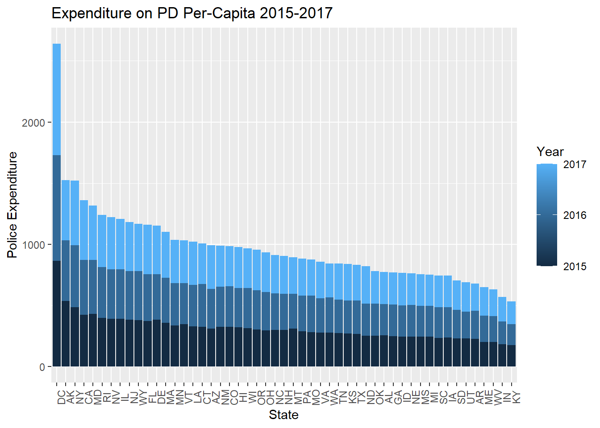
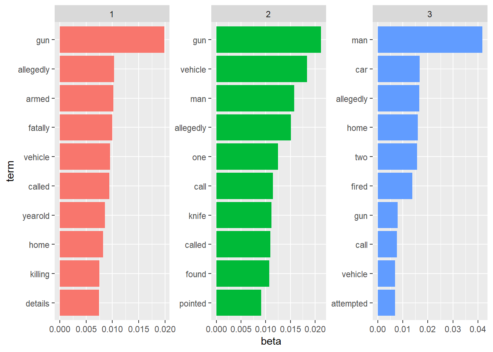
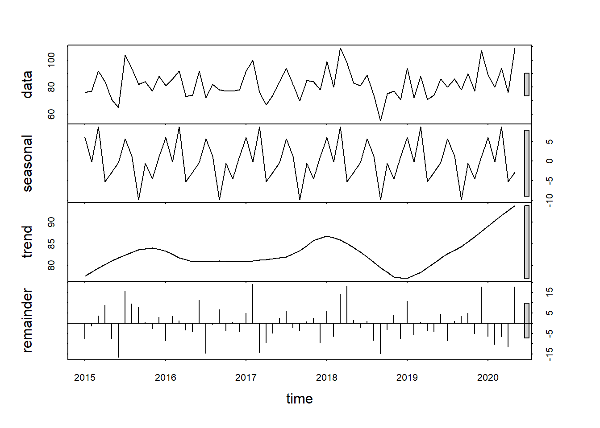

Analysis and Forecasting of Fatal Police Shootings in the U.S.
Arbaaz Mohideen & Kimberly Tse - “Partners in Crime”
Research Mentor: Dr. Sayed Mostafa
7/31/2020
Centered Text ## Abstract
Fatal police shootings have been an interest in the political, social, and academic field, as there has been discrepancy of whether the police used force to protect the people. With the increased awareness of the Black Lives Matter Movement (BLM) and the movement of Defunding the Police, there are speculations of the legitimacy of police use-of-force. In this report, we will do comprehensive analyses making use of factors that may increase the likelihood of fatal police shootings and whether funding for police departments have a significant relation with fatal police shootings. To achieve this, we will use multiple different datasets and combine them together. We were able to observe which factors have a strong correlation on the rate of shootings through Exploratory Data Analysis which allowed us to see the univariate and multivariate distributions. We will address the above research questions by making use of Poisson Regression for the rate of shootings at the state and county levels, and Time Series Forecasting for the monthly number of shootings in the U.S.
Introduction
Fatal police shootings have been an increasing interest in the political, social, and academic field (Shane 2017). The police use-of-force is meant to be used as a means to apprehend the person and keep citizens and themselves safe. However, with the increased awareness of the BLM movement and the movement of Defunding the Police, there are speculations of the legitimacy of police use-of-force.
The BLM movement was first founded in the response of the murder of Trayvon Martin with the purpose to giving black communities power to rise against white supremacy. This movement has resurfaced due to the murder of George Floyd in May 25, 2020, which spurred a mass movement of calling out the police for racism and targeting them for police reform. The idea of “Defunding the Police” was born, with the sole idea of putting more funding into the community rather than law enforcers due to the rising concern of whether the police are actually protecting their citizens.
Beginning in 2015, information of each victim claimed from fatal police shootings are listed in the Washington Post, regarding their demographics, health, and limited information of what the victim’s action was in the scene of the fatal shooting. However, we cannot tell the whole story from this data. In various research articles, each has looked at specific factors of fatal police shootings in a span of one or two years of the occurrence of fatal police shootings. Our dataset is based from the Washington Post who has started taking note of fatal police shootings occurring across the United States starting from 2015 and onward. We will combine this dataset with numerous other datasets that will help further our understanding of our analysis of fatal police shootings. All of these datasets are publicly available and can be obtained to be able to recreate the process.
In this report, we will do a comprehensive analysis of fatal police shootings in the U.S. at the state and county level. Our research questions are 1) What factors may increase the rate of fatal police shootings at state and county levels, 2) Whether funding for police departments have a significant relation to fatal police shootings at the state level, and 3) Predict the count of fatal police shootings that will happen in the U.S. over the second half of the year 2020. We compiled numerous datasets ranging from January 2015 to June 2020, which are accessible to the public. Although data regarding this topic are limited, it will at the least provide some insight of fatal police shootings, helping us predict the rate of fatal police shootings for the next seven months as well as guiding us for implementing policy decisions regarding fatal police shootings.
Background
People would expect the officer to act on whatever means necessary in order to apprehend the person and protect themselves and the citizens around the area according to Jon (Shane 2020). However, with the rising attention of the unnecessary force the police have put upon people, there is no doubt about the legitimacy of the police force and what they should or should not have done.
Situational
Race has been a prominent factor of determining its significance for fatal police shootings, and there seems to be different conclusions of how race affects the likelihood of fatal police shootings. On one hand, there is research showing that race does impact the likelihood of racial disparities of Blacks and Whites in select cities (Siegel 2019) and at the state level (Mesic 2018). There is also research supporting that there is bias against non-White drivers for traffic stops and searches (Pierson 2020). Though this research is focused on fatal shootings that already occurred, looking at potential situations where people are in confrontation with the police can lead to such occurrences. Further research supports this with resampling of the fatal police shootings when taking the bias out of the sampling (Mentch). There is also research on how the location and economic status relate to racial bias, which shows that there is significant evidence of racial bias in police and even stronger association in metropolitan areas with low income and a sizable amount of Blacks in the area (Ross 2015). On the other hand, there is research that is against the idea that being a certain race makes you more likely to be shot (Shane 2020).
Firearm
Firearm has been another prominent factor observed to see if it has any significance on fatal police shootings, and it seems as it is so as supported by previous research. One of the research looked into the relation of firearm availability and fatal police shootings (Nagin 2020), where another looked into whether people who have a firearm in hand when in police confrontation have a relation with fatal police shootings (Hemenway 2019). In both cases, there seems to be a strong association with a person carrying a firearm and the likelihood of a fatal police shooting. There was a study on the relation between the strength of firearm legislation and fatal police shootings, which they found that stricter firearm legislation can associate with lower fatal police shootings (Kivisto 2017).
Behavioral
There has been some research of how the actions of the people in confrontation of the police relate to fatal police shootings. A research study was conducted to see whether domestic disturbances were more likely to cause a fatal shooting (Pinchevsky 2018). From this study, there was no significant association of domestic disturbances and the likelihood of a fatal police shooting, however, people who have a history of crime or who are equipped with a weapon at the time of police confrontation are more likely to involve a fatal shooting. There was also a study of suicides by police where they studied events that occurred that led to the fatal police shooting, the psychological backgrounds of the victims, and classifying them if that case is considered as suicide by police (Kesic 2012). Researchers found that with the cases observed, one third of the cases was considered suicide-by-police, on which these cases contained decedents who had mental or physical disproders and have backgrounds of suicide attemps.
Location
There has been some research on how location affects the rate of fatal police shootings, where there are mixed results. A research study was conducted to see if fatal police shootings occur disproportionately in urban areas and were comparing fatal police shootings in different areas (urban, suburban, and rural), with the result being that there is not a significant difference in the rate of fatal police shootings in urban or rural areas, though suburban rates seem to be lower than the other two location types.
Outro
With all these factors observed in previous research, it is no doubt that this is not a new topic. However, we will like to expand this topic as we found there is no research on how police expenditure affects the rate of fatal police shootings. The Defunding the Police movement is our motivation to explore this factor and see whether funding for police departments have a significant association with fatal police shootings. We will also forecast the number of fatal police shootings for the next seven months (until December 2020) and observe any patterns/trends.
Data, Method and Analysis
Data
(add note: all datasets will be in repository so that i can be replicated)
For this study, we made use of publicly available data. We used a combination of multiple different datasets to answer our research question of how multiple different variables affect the rate of shootings in state and county level. So in order to achieve this we need the following datasets:
- Fatal Police Shootings data collected by Washington Post over the period of 2015-2020 (Washington Post, 2015).
- Mapping Police Violence data over the period of 2013-2020 which contains all types of deaths caused by police including shootings. (Sinyangwe, S., & McKesson, D., n.d.).
- Suicide Rates across 50 states in the US in 2016. (Violence Policy Center, n.d.)
- Number of Registered Firearms by State in the year of 2019. (Statista Research Department, 2019).
- US Population Racial Diversity by state for the year of 2017. (Governing, 2017).
- State General Expenditure over the period of 2015-2017. (Tax Policy Center, 2020).
- Offenses known to law enforcement by City over the period of 2015-2018 (Bureau of Justice Statistics, 2020)
- Officer count by police department in every state for 2015 & 2016. (Governing, 2018)
- Population density by state for 2017. (World Population Review, n.d.).
- Census Age Distribution by State for 2015-2019 where we focused on ages 20-45. (US Census Bureau, 2020b).
- Census Urbanization Index over the period of 2010-2015. (US Census Bureau, 2019b).
- Census County Land Area 2010 (US Census Bureau, 2019a).
- Census County Male Percentage and Age Distribution 2015-2019 (US Census Bureau, 2020a).
For the suicide rates data, we were only able to find it for the year of 2016. So we made an assumption that the suicide rates doesn’t change based on the year. So we mapped the same numbers for every year by state. We applied the same assumption for US population Racial Diversity. For the Population density, we found the average for the years of 2017 and 2020 and mapped it onto all years considering the same assumption that the density won’t change drastically within 6 years. Since we do not have the data for 2020 for the Census Age distribution, we get the averages of the years of 2015-2019 and imputate into the year of 2020, assuming that the age distribution does not change much over the years.
Before we work on any type of statistics, we would like to combine these data sets into one. We made use of a function in R known as left_join which allows us to combine two sets of data given a common key (or Variable) in both datasets. We combined the datasets in the order they are specified.
Washington Post’s data (1) provides a wide range of variables but the mappings of police killings data (2) caught our eyes because of the following variables: “Official Action against officer”, “A brief description of the situation that led to the action”, “Geography” and “Charges against the Victim.” We combined 1 and 2 by State, Age, Date, and Threat level displayed by the victim as these were the common variables with similar types of entries. We couldn’t combine them using victim names as both of them had a different way of collecting it. Hence we had to combine it in a way where we don’t have a loss of data and retain the other valuable information.
We then combined 3,4,5,6,7 by State and Year and combined it to the previously combined data. For 8 and 9, we had to attach it by City, State and Year as these datasets are based off of city level information. Finally, we attached 10 by State and Year as the key.
We also created the following variables that we used in the models:
- Crime Index per 10k - Summation of all types of crimes in a city divided by 10k.
- Police Expenditure as a Percentage of Total Expenditure - We simply divided the police expenditure by the total expenditure for each state which gives us a better understanding of the relationship between those variables.
- Population Diversity Index - Instead of using the population diversity dataset by state for our model which contains columns for 5 different races which are White, Black, Hispanic, Asian and Other, we opted to make a new variable which condenses these variables into one. The formula to calculate it is shown below:
\(PopulationDiversity Index = 1 - [Pr(White)^2 + Pr(White)^2 + Pr(Black)^2 + Pr(Hispanic)^2 +Pr(Asian)^2 + Pr(Other)^2]\)
- Urbanization Index - Percentage of urban population in the state/county.
- Decision on Officer - Percentage of incidents where the officer action was justified or the officer was charged at state/county levels.
So with all the changes applied to the combined dataset, we produced some summary statistics with the variables that will be used in our Poisson Regression models.
| Rank | State | Count | Rate |
|---|---|---|---|
| 1 | AK | 39 | 5.29 |
| 2 | NM | 106 | 5.07 |
| 3 | OK | 164 | 4.17 |
| 4 | AZ | 253 | 3.58 |
| 5 | CO | 195 | 3.45 |
| 6 | NV | 96 | 3.21 |
| 7 | WV | 54 | 2.97 |
| 8 | MT | 31 | 2.93 |
| 9 | AR | 82 | 2.73 |
| 10 | WY | 14 | 2.40 |
| 11 | ID | 41 | 2.37 |
| 12 | LA | 109 | 2.34 |
| 13 | MO | 139 | 2.27 |
| 14 | MS | 65 | 2.18 |
| 15 | KY | 95 | 2.13 |
| 16 | AL | 104 | 2.13 |
| 17 | OR | 88 | 2.12 |
| 18 | HI | 30 | 2.11 |
| 19 | TN | 138 | 2.05 |
| 20 | WA | 152 | 2.04 |
| 21 | CA | 796 | 2.03 |
| 22 | SD | 17 | 1.95 |
| 23 | UT | 60 | 1.92 |
| 24 | DC | 13 | 1.89 |
| 25 | SC | 88 | 1.75 |
| 26 | GA | 181 | 1.73 |
| 27 | TX | 480 | 1.69 |
| 28 | KS | 49 | 1.68 |
| 29 | FL | 350 | 1.66 |
| 30 | ME | 22 | 1.65 |
| 31 | WI | 91 | 1.57 |
| 32 | NC | 156 | 1.51 |
| 33 | ND | 11 | 1.45 |
| 34 | VT | 9 | 1.44 |
| 35 | IN | 95 | 1.42 |
| 36 | DE | 13 | 1.36 |
| 37 | OH | 155 | 1.33 |
| 38 | MD | 79 | 1.31 |
| 39 | NE | 24 | 1.25 |
| 40 | VA | 95 | 1.12 |
| 41 | MN | 61 | 1.10 |
| 42 | IA | 32 | 1.02 |
| 43 | NH | 13 | 0.96 |
| 44 | PA | 108 | 0.84 |
| 45 | IL | 103 | 0.81 |
| 46 | MI | 78 | 0.78 |
| 47 | NJ | 68 | 0.77 |
| 48 | CT | 21 | 0.59 |
| 49 | NY | 101 | 0.52 |
| 50 | MA | 35 | 0.51 |
| 51 | RI | 4 | 0.38 |
| State | Shootings per 100k | Count of Shootings | Victim Age | Population in 10k | Firearms per 10k | Crime Index per 10k | Police Expenditure as a fraction of Total | Population Density | Population Diversity Index |
|---|---|---|---|---|---|---|---|---|---|
| AK | 0.92 (0.151) | 7 (1.117) | 33.29 (10.53) | 73.663 (0.3552) | 278.57 | 1027.16 (235.41) | 0.028 (0.0009) | 1.29 | 0.6 |
| AL | 0.4 (0.119) | 19 (5.782) | 40.41 (14.33) | 487.6236 (1.8899) | 345.08 | 1025.29 (350.84) | 0.031 (0.0002) | 96.59 | 0.5 |
| AR | 0.54 (0.179) | 16 (5.403) | 39.69 (13.97) | 300.7871 (1.5591) | 361.73 | 1041.54 (385.16) | 0.028 (0.0008) | 58.07 | 0.45 |
| AZ | 0.67 (0.104) | 47 (7.358) | 34.71 (12.9) | 695.26 (13.2994) | 294.69 | 782.85 (259.51) | 0.051 (0.001) | 63.36 | 0.6 |
| CA | 0.4 (0.074) | 157 (28.382) | 33.81 (11.35) | 3911.0256 (19.1636) | 96.31 | 654.21 (296.84) | 0.04 (0.0011) | 255.09 | 0.69 |
| CO | 0.59 (0.104) | 33 (6.068) | 36.36 (12.37) | 562.9002 (12.4221) | 200.29 | 793.96 (253.08) | 0.038 (0.0011) | 55.25 | 0.49 |
| CT | 0.12 (0.031) | 4 (1.105) | 31.85 (12.92) | 357.4336 (0.6564) | 209.49 | 371.78 (113.59) | 0.035 (0.0006) | 738.46 | 0.52 |
| DC | 0.53 (0.229) | 4 (1.557) | 38.08 (14.46) | 68.6753 (1.0135) | 871.41 | 1119.94 (55.92) | 0.047 (0.0005) | 11595.57 | 0.65 |
| DE | 0.41 (0.22) | 4 (2.1) | 33 (12.61) | 95.7234 (1.3043) | 55.18 | 1028.22 (324.33) | 0.036 (0.0012) | 498.93 | 0.56 |
| FL | 0.29 (0.027) | 60 (4.995) | 36.9 (13.01) | 2079.7327 (53.3029) | 208.13 | 926.85 (317.87) | 0.054 (0.001) | 400.72 | 0.62 |
| GA | 0.31 (0.076) | 32 (8.142) | 36.42 (14.28) | 1043.2035 (17.5465) | 216.69 | 1065.79 (521.92) | 0.038 (0.0003) | 184.01 | 0.62 |
| HI | 0.52 (0.231) | 7 (3.284) | 38.17 (11.43) | 142.1098 (0.4353) | 60.98 | 678.67 (7.71) | 0.034 (0.0007) | 221.1 | 0.8 |
| IA | 0.19 (0.059) | 6 (1.865) | 30.77 (7.15) | 314.016 (1.5318) | 116.37 | 805.9 (316.56) | 0.026 (0.0005) | 56.62 | 0.26 |
| ID | 0.47 (0.182) | 8 (3.238) | 40.82 (11.7) | 172.2304 (5.195) | 341.69 | 501.85 (168.17) | 0.038 (0.0015) | 21.44 | 0.31 |
| IL | 0.18 (0.028) | 23 (3.594) | 31.07 (10.36) | 1281.914 (4.2399) | 115.22 | 838.59 (255.16) | 0.045 (0.0014) | 229.31 | 0.57 |
| IN | 0.25 (0.048) | 17 (3.162) | 39.01 (13.58) | 667.235 (4.7824) | 200.23 | 948.64 (277.24) | 0.025 (0.0004) | 187.18 | 0.36 |
| KS | 0.32 (0.072) | 9 (2.086) | 38.43 (12.94) | 291.044 (0.161) | 186.95 | 850.91 (389.45) | 0.032 (0.0004) | 35.61 | 0.41 |
| KY | 0.37 (0.067) | 17 (2.977) | 39.79 (12.46) | 445.3966 (2.056) | 210.42 | 533.6 (259.17) | 0.02 (0.0006) | 113.38 | 0.28 |
| LA | 0.42 (0.109) | 20 (5.11) | 36.37 (12.04) | 466.2826 (1.0786) | 249.63 | 1188.75 (382.78) | 0.039 (0.0004) | 107.97 | 0.55 |
| MA | 0.16 (0.039) | 11 (2.631) | 40.61 (9.19) | 682.7789 (3.0228) | 58.42 | 476.6 (130.21) | 0.033 (0.0001) | 886.95 | 0.47 |
| MD | 0.23 (0.06) | 14 (3.583) | 35.46 (13.49) | 602.6503 (2.9987) | 212.88 | 1058.03 (480.64) | 0.045 (0.0005) | 625.08 | 0.64 |
| ME | 0.39 (0.24) | 5 (3.195) | 40.09 (15.93) | 133.7175 (0.5642) | 130.2 | 499.44 (224.79) | 0.026 (0.0009) | 43.47 | 0.13 |
| MI | 0.14 (0.034) | 14 (3.365) | 35.99 (11.85) | 995.666 (2.217) | 83.72 | 735.97 (354.88) | 0.03 (0.0003) | 176.93 | 0.42 |
| MN | 0.22 (0.038) | 12 (2.057) | 37.42 (12.99) | 553.527 (5.7741) | 178.12 | 692.03 (290.92) | 0.034 (0.0008) | 70.81 | 0.35 |
| MO | 0.39 (0.078) | 24 (4.773) | 35.45 (12.76) | 610.6379 (2.8524) | 144.56 | 1135.18 (420.53) | 0.039 (0.0004) | 89.34 | 0.35 |
| MS | 0.44 (0.165) | 13 (4.899) | 37.38 (12.48) | 298.3967 (0.5483) | 175.43 | 989.03 (266.53) | 0.029 (0.0001) | 63.65 | 0.54 |
| MT | 0.5 (0.081) | 5 (0.871) | 36.9 (9.88) | 105.6929 (1.7024) | 222.17 | 1008.19 (276.73) | 0.035 (0.0024) | 7.34 | 0.25 |
| NC | 0.27 (0.055) | 28 (5.635) | 37.99 (14.23) | 1028.9266 (18.4036) | 176.17 | 889.09 (462.66) | 0.039 (0.0005) | 214.79 | 0.55 |
| ND | 0.37 (0.154) | 3 (1.168) | 31 (6.12) | 75.719 (0.2771) | 260.44 | 585.98 (165.78) | 0.023 (0.0016) | 10.99 | 0.28 |
| NE | 0.34 (0.107) | 6 (1.998) | 36.92 (11.72) | 191.278 (2.1055) | 155.57 | 775.18 (98.78) | 0.028 (0.0003) | 25.2 | 0.36 |
| NH | 0.18 (0.049) | 2 (0.65) | 38.54 (12.82) | 134.9048 (1.0544) | 439.9 | 281.32 (134.62) | 0.038 (0.0012) | 151.57 | 0.18 |
| NJ | 0.14 (0.024) | 12 (2.111) | 34.45 (13.2) | 887.9904 (1.5927) | 101.6 | 646.72 (241.81) | 0.038 (0.0003) | 1219.9 | 0.63 |
| NM | 0.93 (0.159) | 20 (3.324) | 36.23 (12.8) | 209.2597 (0.2535) | 505.76 | 1190.53 (410.87) | 0.032 (0.0008) | 17.25 | 0.61 |
| NV | 0.57 (0.12) | 17 (3.439) | 37.93 (13.08) | 296.8595 (9.2818) | 326.47 | 618.97 (162.07) | 0.058 (0.0003) | 27.95 | 0.66 |
| NY | 0.09 (0.018) | 18 (3.563) | 40.2 (14.33) | 1955.8885 (8.4697) | 42.39 | 547.04 (229.92) | 0.037 (0.0001) | 416.86 | 0.63 |
| OH | 0.24 (0.045) | 28 (5.246) | 34.32 (13.82) | 1165.3983 (3.1831) | 150.87 | 799.39 (341.49) | 0.035 (0.0005) | 286.41 | 0.36 |
| OK | 0.74 (0.141) | 29 (5.558) | 39.24 (14.26) | 393.1914 (1.6638) | 211.38 | 944.71 (357.01) | 0.035 (0.0005) | 57.48 | 0.55 |
| OR | 0.36 (0.052) | 15 (2.16) | 40.99 (13.95) | 413.4783 (8.9287) | 180.8 | 704.22 (357.21) | 0.03 (0.0003) | 43.98 | 0.41 |
| PA | 0.15 (0.035) | 20 (4.462) | 37.18 (14.68) | 1279.2654 (1.108) | 212.18 | 695.71 (224.44) | 0.031 (0.0009) | 286.37 | 0.4 |
| RI | 0.17 (0.04) | 2 (0.422) | 30.8 (17.49) | 105.6812 (0.0622) | 44.05 | 556.82 (243.45) | 0.041 (0.0002) | 1023.11 | 0.45 |
| SC | 0.31 (0.069) | 16 (3.3) | 40.21 (13.84) | 502.5089 (11.1099) | 197.67 | 1138.43 (594.39) | 0.03 (0.0005) | 170.23 | 0.52 |
| SD | 0.36 (0.082) | 3 (0.697) | 35.44 (9.62) | 87.2097 (1.3411) | 357.08 | 727.54 (274.8) | 0.029 (0.0004) | 11.69 | 0.31 |
| TN | 0.37 (0.087) | 25 (6.007) | 38.91 (12.97) | 672.8293 (9.4336) | 180.08 | 958.78 (483.93) | 0.041 (0.0011) | 165.07 | 0.42 |
| TX | 0.31 (0.058) | 88 (16.03) | 35.35 (12.17) | 2810.4758 (58.88) | 258.2 | 755.13 (269.87) | 0.036 (0.0002) | 110.59 | 0.65 |
| UT | 0.35 (0.131) | 11 (4.21) | 34.14 (10.14) | 309.9797 (9.0703) | 301.69 | 890.6 (626.86) | 0.029 (0.0012) | 38.85 | 0.37 |
| VA | 0.21 (0.054) | 17 (4.519) | 36.82 (14.16) | 846.4853 (7.6511) | 421.73 | 661.12 (280.43) | 0.034 (0.0004) | 216.46 | 0.57 |
| VT | 0.34 (0.125) | 2 (0.782) | 44.67 (16.32) | 62.4173 (0.0477) | 123.62 | 592.41 (141.4) | 0.03 (0.001) | 67.9 | 0.14 |
| WA | 0.36 (0.096) | 27 (7.296) | 39.15 (12.26) | 737.8278 (16.4893) | 162.49 | 1234.07 (619.33) | 0.029 (0.0012) | 114.38 | 0.5 |
| WI | 0.29 (0.082) | 17 (4.724) | 36.75 (12.82) | 579.2315 (2.6352) | 137.49 | 740.16 (332.67) | 0.036 (0.0011) | 107.53 | 0.33 |
| WV | 0.6 (0.129) | 11 (2.315) | 42.84 (14.73) | 181.6404 (1.9079) | 229.33 | 843.89 (572.67) | 0.024 (0.0001) | 74.76 | 0.15 |
| WY | 0.71 (0.333) | 4 (1.956) | 39.86 (10.65) | 58.2157 (0.3774) | 2302.73 | 553.77 (131.33) | 0.025 (0.0002) | 5.9 | 0.28 |
| US | 1.91 (1.06) | 105.94 (131.35) | 37 (13) | 2132.5446 (1514.7346) | 174.35 (118.82) | 759.93 (358.26) | 0.0396 (0.0065) | 228.21 (432.22) | 0.59 (0.12) |
| State | Gender Male | Victim Race Black | Officer Charged (Justified) | Victim Not Charged | Victim mental illness False | Victim Shot | Victim Armed | Threat Level Attack (Other) | Victim Not Fleeing | Body Camera Absent | Rural (Suburban) |
|---|---|---|---|---|---|---|---|---|---|---|---|
| AK | 94.87 | 8.33 | NA (NA) | 100.00 | 84.62 | 97.44 | 66.67 | 74.36 (25.64) | 55.56 | 89.74 | 50 (15.38) |
| AL | 93.27 | 32.63 | 1.17 (1.17) | 99.04 | 75.00 | 94.23 | 66.36 | 72.12 (21.15) | 64.71 | 86.54 | 42.86 (14.29) |
| AR | 98.78 | 34.72 | NA (1.94) | 100.00 | 84.15 | 98.78 | 59.76 | 67.07 (28.05) | 73.68 | 95.12 | 50.79 (15.87) |
| AZ | 93.28 | 7.66 | 1.81 (NA) | 99.60 | 81.42 | 95.26 | 51.72 | 63.64 (32.81) | 67.49 | 89.72 | 12.02 (25.48) |
| CA | 95.10 | 17.39 | 0.83 (0.61) | 99.75 | 77.26 | 93.09 | 38.54 | 54.65 (39.2) | 67.02 | 85.80 | 7.86 (39.75) |
| CO | 96.92 | 10.71 | NA (5.13) | 100.00 | 87.18 | 97.44 | 66.52 | 63.08 (34.87) | 50.54 | 89.23 | 16.67 (26.39) |
| CT | 100.00 | 15.00 | NA (36.88) | 100.00 | 76.19 | 80.95 | 20.59 | 57.14 (38.1) | 55.00 | 85.71 | NA (7.69) |
| DC | 84.62 | 92.31 | NA (NA) | 100.00 | 84.62 | 100.00 | 53.85 | 76.92 (23.08) | 69.23 | 76.92 | NA (100) |
| DE | 100.00 | 50.00 | NA (NA) | 100.00 | 69.23 | 100.00 | 61.54 | 53.85 (38.46) | 61.54 | 84.62 | 16.67 (25) |
| FL | 94.86 | 34.26 | 1.21 (0.41) | 99.71 | 73.14 | 94.86 | 53.78 | 64.57 (31.43) | 68.45 | 95.14 | 13.16 (17.29) |
| GA | 92.78 | 43.75 | 2.46 (0.57) | 98.90 | 79.01 | 93.37 | 62.19 | 76.8 (19.89) | 66.09 | 90.61 | 27.78 (11.11) |
| HI | 93.33 | 3.45 | NA (0.91) | 100.00 | 80.00 | 90.00 | 36.67 | 66.67 (33.33) | 68.97 | 90.00 | 30.77 (7.69) |
| IA | 93.75 | 22.58 | NA (0.85) | 100.00 | 78.12 | 96.88 | 62.50 | 59.38 (37.5) | 46.67 | 81.25 | 37.04 (11.11) |
| ID | 95.12 | 2.70 | NA (1.87) | 100.00 | 85.37 | 97.56 | 69.57 | 70.73 (24.39) | 65.00 | 85.37 | 44.44 (13.89) |
| IL | 96.12 | 58.59 | 0.2 (0.42) | 99.03 | 82.52 | 95.15 | 68.85 | 63.11 (29.13) | 47.47 | 89.32 | 15.56 (43.33) |
| IN | 97.89 | 31.87 | NA (1.69) | 100.00 | 73.68 | 95.79 | 63.16 | 72.63 (26.32) | 72.04 | 86.32 | 25 (40.79) |
| KS | 93.88 | 12.50 | NA (3.04) | 100.00 | 75.51 | 91.84 | 58.93 | 73.47 (22.45) | 64.58 | 93.88 | 23.81 (35.71) |
| KY | 95.74 | 17.24 | NA (NA) | 100.00 | 92.63 | 97.89 | 60.00 | 73.68 (21.05) | 66.67 | 88.42 | 57.89 (13.16) |
| LA | 98.17 | 58.82 | 1.25 (3.76) | 99.08 | 78.90 | 96.33 | 59.63 | 67.89 (22.02) | 68.00 | 87.16 | 32.97 (23.08) |
| MA | 100.00 | 24.24 | NA (0.83) | 100.00 | 68.57 | 100.00 | 39.55 | 62.86 (37.14) | 57.14 | 97.14 | NA (48.28) |
| MD | 94.94 | 61.04 | 0.81 (NA) | 98.73 | 72.15 | 97.47 | 55.70 | 59.49 (39.24) | 72.73 | 72.15 | 3.12 (32.81) |
| ME | 95.45 | 4.76 | NA (NA) | 100.00 | 90.91 | 95.45 | 59.09 | 54.55 (36.36) | 83.33 | 100.00 | 73.33 (6.67) |
| MI | 97.44 | 33.80 | NA (0.82) | 100.00 | 67.95 | 93.59 | 57.24 | 75.64 (23.08) | 79.22 | 89.74 | 23.53 (30.88) |
| MN | 96.72 | 16.67 | 2.87 (6.57) | 98.36 | 65.57 | 95.08 | 55.00 | 60.66 (29.51) | 79.66 | 68.85 | 25.49 (19.61) |
| MO | 93.53 | 39.34 | 0.65 (1.45) | 99.28 | 84.89 | 97.84 | 69.61 | 74.1 (22.3) | 57.36 | 98.56 | 20.69 (40.52) |
| MS | 96.92 | 37.70 | NA (NA) | 98.46 | 86.15 | 100.00 | 65.15 | 70.77 (21.54) | 51.67 | 93.85 | 50 (6.25) |
| MT | 96.77 | NA | NA (NA) | 100.00 | 87.10 | 93.55 | 61.29 | 58.06 (38.71) | 71.43 | 93.55 | 41.67 (8.33) |
| NC | 96.79 | 34.46 | NA (1.97) | 100.00 | 78.85 | 96.15 | 74.87 | 68.59 (28.21) | 69.54 | 84.62 | 33.61 (11.76) |
| ND | 100.00 | NA | NA (6.45) | 100.00 | 81.82 | 100.00 | 45.45 | 63.64 (36.36) | 54.55 | 90.91 | 50 (16.67) |
| NE | 95.83 | 20.83 | NA (10.39) | 100.00 | 79.17 | 91.67 | 50.00 | 70.83 (29.17) | 78.26 | 91.67 | 20 (35) |
| NH | 100.00 | NA | NA (3.23) | 100.00 | 53.85 | 100.00 | 61.54 | 30.77 (46.15) | 84.62 | 92.31 | 50 (10) |
| NJ | 97.06 | 50.00 | 2.3 (NA) | 98.53 | 79.41 | 100.00 | 45.35 | 51.47 (39.71) | 69.35 | 97.06 | 7.02 (42.11) |
| NM | 94.34 | 1.08 | NA (NA) | 100.00 | 82.08 | 98.11 | 65.09 | 63.21 (28.3) | 66.00 | 85.85 | 31.03 (16.09) |
| NV | 96.88 | 17.65 | NA (NA) | 100.00 | 71.88 | 92.71 | 58.87 | 66.67 (29.17) | 68.13 | 67.71 | 11.27 (40.85) |
| NY | 96.04 | 51.11 | 0.9 (4.12) | 99.01 | 63.37 | 91.09 | 50.47 | 78.22 (21.78) | 64.95 | 86.14 | 13.41 (58.54) |
| OH | 96.77 | 38.36 | 2.02 (1.38) | 98.06 | 75.48 | 97.42 | 53.62 | 61.29 (34.84) | 69.80 | 91.61 | 17.69 (36.92) |
| OK | 98.17 | 21.33 | 2.05 (3.6) | 98.78 | 78.05 | 92.07 | 55.29 | 70.12 (27.44) | 63.52 | 84.15 | 47.24 (22.83) |
| OR | 97.73 | 9.21 | NA (2.21) | 100.00 | 69.32 | 93.18 | 56.76 | 54.55 (39.77) | 72.50 | 93.18 | 25.76 (19.7) |
| PA | 97.22 | 44.21 | 0.8 (1.51) | 98.15 | 75.00 | 89.81 | 53.51 | 70.37 (26.85) | 71.43 | 100.00 | 19.1 (28.09) |
| RI | 100.00 | 50.00 | NA (NA) | 100.00 | 100.00 | 100.00 | 20.00 | 100 (NA) | NA | 75.00 | NA (66.67) |
| SC | 95.45 | 33.75 | 4.92 (1.88) | 97.73 | 80.68 | 95.45 | 70.41 | 72.73 (23.86) | 69.05 | 87.50 | 46.58 (9.59) |
| SD | 100.00 | NA | NA (NA) | 100.00 | 64.71 | 100.00 | 70.59 | 82.35 (17.65) | 66.67 | 94.12 | 53.85 (NA) |
| TN | 94.93 | 25.00 | NA (0.81) | 100.00 | 75.36 | 99.28 | 55.03 | 68.12 (28.99) | 67.41 | 91.30 | 34.51 (13.27) |
| TX | 93.75 | 23.06 | 1.96 (0.7) | 99.38 | 81.46 | 93.12 | 63.37 | 66.04 (29.79) | 64.69 | 91.67 | 22.22 (18.78) |
| UT | 100.00 | 12.28 | NA (NA) | 100.00 | 73.33 | 98.33 | 42.50 | 53.33 (38.33) | 57.89 | 68.33 | 6.38 (17.02) |
| VA | 93.68 | 43.48 | 1.09 (1.7) | 98.95 | 72.63 | 96.84 | 62.11 | 67.37 (29.47) | 67.74 | 87.37 | 35.8 (20.99) |
| VT | 100.00 | NA | NA (NA) | 100.00 | 55.56 | 88.89 | 55.56 | 55.56 (33.33) | 66.67 | 66.67 | 71.43 (28.57) |
| WA | 96.71 | 16.67 | NA (0.85) | 100.00 | 65.79 | 93.42 | 48.41 | 57.89 (37.5) | 70.14 | 90.79 | 18.18 (17.36) |
| WI | 98.90 | 22.73 | 5.25 (1.34) | 98.90 | 73.63 | 97.80 | 61.21 | 52.75 (46.15) | 68.97 | 85.71 | 42.25 (18.31) |
| WV | 96.30 | 17.39 | NA (1.71) | 100.00 | 77.78 | 100.00 | 62.96 | 70.37 (27.78) | 61.54 | 90.74 | 60 (13.33) |
| WY | 92.86 | NA | NA (NA) | 100.00 | 64.29 | 92.86 | 42.86 | 50 (28.57) | 69.23 | 100.00 | 25 (8.33) |
| US | 95.61 | 27.72 | 1.03 (1.18) | 99.00 | 78.00 | 93.13 | 50.95 | 59.02 (35.03) | 66.87 | 88.43 | 11.02 (48.13) |
Method
1. Exploratory Data Analysis
This section is dedicated to understanding the relationship between the various variables from the combined dataset and Shootings data from the Washington Post. In order to see the relationship clearly, we made visualizations which helps us better understand the correlation between them. In scatter plots, we are trying to see if the linear relationship is positive or negative. If it’s positive then it means that an increase in the variable will cause an increase in the Shootings on average. The slope of the line will tell us by how much will change occur. The bar charts show a comparison between the different categories within the variable. It depicts how largely disproportionate some of the categories are when it comes to certain variables such as Threat Level displayed by a victim and the proportion of Victim Race Percentage compared to the Population Race Percentages.
We performed the Exploratory Data Analysis to help us get a better understanding of these variables and also give us an insight into which variables should be prioritized more in the context of our Regression Modeling. Shown below are the most important visualizations that proved to be very helpful during our process of EDA.
We compiled the total number of shootings for each state throughout the time period of the data from 2015 to 2020. We ranked the states in the descending order based on the total number of shootings. Using the ranks, we plotted the number of shootings in each for the top 10 states by year in order for us to see the trend for these moving from one year to another.
For this visual, we went through the same procedure as the previous one but instead of looking at the raw counts, we considered using Shootings per 100k Population for each state. We plotted the top 10 states with the highest rate of Shootings per 100k

We computed the number of shootings throughout the US by each month and year. We changed those values into Time Series data and we were able to make this visual that encompass the entire US with the monthly number of shootings. This also gives us an insight on the trend certain months have in common.
This is partially similar to Fig 2 but here we collect the rate of Shootings per 100k for every state by year. We made use of a stacked barplot to visually represent the comparison between certain states. Even though California had the highest number of shootings, Alaska turned out to be the one that had the higher rate shootings by population.
With this visual, we were trying to figure out if the days of the week have any impact in the number of shootings. There are observable patterns but they aren’t highly significant for us to draw any conclusions.

For Police Expenditure, we had data for the years of 2015-2017. Just like previous stacked barplot, this helps us understand how different states spend their funding for the police department alone. Again, they are just raw numbers spent on the Police Department per Capita for each state.
For this visual, we divided the Police Expenditure by Total Expenditure for each state and then we plotted it against Shootings per 100k for those. We are able to see a downwards trend as we move to the next year. This is also because some of the states with the highest police expenditure as a fraction of total expenditure have less shootings. For example, DC has the highest police expenditure per capita and has one of the highest fractions as well but it has a lower rate of shootings.
This visual is similar to the previous one but it’s annualized which means that we took the sum of the values and divided it by 3 as we only have data for the years of 2015-2017 for Police expenditure.
We used the formula mentioned above to calculate the population diversity for each State by year. Population Diversity is the chance of two people are of a different race from a state in percentage. So this visual shows a positive correlation between Annualized Population Diversity and the rate of Shootings per 100k. Even though the correlation is positive, it isn’t very strong meaning that the change in Shootings per 100k as Population Diversity increases isn’t huge.
We calculated the Crime Index by adding up all the crimes in a state and dividing it by the population. In this case, we have Crime Index per 10k Population plotted against the rate of Shootings per 10k. You might have noticed the word Annualized, this means that both values were added by States for all years and divided by 4 as we only have 4 years of Crime Data.
This visual is able to show the distribution in the Population Racial Diversity and the Victim Racial Diversity in one. This helps us see that the African American are represented more in the shootings than in the population itself.
Similar to the other visuals, we are trying to see the relation between Percentage of Black Population and Black victims involved in the shootings by state. This is also annualized which means each value was added by States for all years and divided by 5.41667 because we have 5 years and 5 months of data (i.e. \(5 + \frac{5}{12} = 5 + 0.4166... ≈ 5.41667\)). This shows a very strong correlation between these variables which later proves to be a very important variable in our model.
We made use of the officer count data for the years of 2015 and 2016 and plotted it against shootings per 10k to keep the proportions equal. For the both years, it depicts a downward trend slope which means that if the officer count per 10k increases then the rate of shootings per 10k decreases with a significant amount.
We had data on what type of action was taken against the officer involved in the incident. For example, Justified means that the officers action was justified to proceed to shoot the victim or Charged means that the officer was charged with murder or other. So we collected the percentages for each state by year and combined the percentages for Justified and Charged. Next, we plotted Percentage of Decision Made against the rate of Shootings per 100k. We are able to see a clear downward trend as the percentage of Decision made on officer increases.
We plotted annualized suicide rates against the rate of shootings per 100k as a way to see how firearm availablity affects the rate of shootings by each state. A shooting incident is possible if the Victim was armed with some type of weapon. So if the firearm availability is high then it could correlate to higher rates of shootings. We clearly see an upward trend as the suicide rate per 100k increases .
This visual is almost the same as the one above but the only difference is that we used the Registered Firearms per 100k data as another way to compare firearm availability to rate of shootings per 100k. Similar to the visual above, this one shows an upward trend as the Registered Firearms per 100k increases.
Urbanization Index is a way to see what percentage of the population lives in an urban area. As we can observe from this visual, there is a downward trend as the Annualized Urbanization Index increases. But the slope of the line isn’t very steep meaning the change caused by the Urbanization Index isn’t drastic.
We used the data on Firearm Fatalities per 100k against the rate of Shootings per 10k by each county for all the years from 2015 to 2020. Since most of the data was close to 0, we used a log transformation in order for us to see the relationship clearly. As we can see, the relationship is a strong downward trend but we have to keep in mind that this visual uses the log of the values we have originally. So even though this shows a strong negative correlation, in the actual numbers, this correlation isn’t as significant.
2. Topic Modeling
With the combined dataset of the Washington Post and the Mapping Police Violence, we are able to look at the descriptions of each of the victims of fatal police shootings from 2015 to 2020. We first proceeded with word clouds, which will give a visualization of the frequency of the words being used; the more frequent the word repeats throughout (in this case, our combined dataset), the bigger that particular word will appear in the visual.
We first created a word cloud encompassing all the words used in the description of each fatal shooting in the dataset to see what kinds of words were used throughout. We took out stop words such as “at,” “the,” and “which” since it doesn’t add to the context of what happened at the fatal shooting event. Here, we have the overall wordcloud of the most frequent words in the descriptions of each incident.
We had the idea of separating the word clouds by race, thinking that there may be some characteristics that may differ by group. However, they all share the same similarity of words. Here we have a wordcloud on the left of the words that describes the incidences that involves White decedents, and on the right are the words that describes the incidences involving African American decedents.
Since many words seem to repeat in each of the groups such as “police,” “officers,” “shot,” and “killed,” we then decided to take out topic-specific words that do not lose the context of the situation. Here we have a wordcloud on the left of the words that describes the incidences that involves White decedents, and on the right are the words that describes the incidences involving Afrinca American decedents.
Taking out topic-specific words did not seem to help as there were even more words that each group had in common. There seems to be no distinction between the groups of words for each race based on these visuals, so we decided to take a different approach to see if we can group each description by topic and be able to see if there are any patterns of topics for each race. Topic modeling is a method in text mining that allows us to classify words in groups that share a focus. The method used for this is Latent Dirichlet allocation, where we can treat each topic as a mixture of words that will convey something contributing to that particular topic.
We decided to first figure out the optimal amount of topics that we can group the words, keeping in mind of maximum coverage and minimum overlapping. We want each topic to span over all the words that can be relevant to that topic and avoid leaving out key words that can fall into that particular topic. At the same time, we want the minimum overlapping of words so that we can avoid confusion of the topics presented and find distinction between other topics. The following two methods are used to find the appropriate amount of topics: 1) To train the LDA model of a sequence of topics and select the number of topics that will best give us both maximum coverage and minimum overlapping, and 2) To manually run the data for each number of topics and see what number of topics are best fit for our dataset.
Again, we took out stop words and topic-specific words that do not take out the context of the situation. We used method 1 to narrow down our options to a certain range of the number of topics, which the range of 3-7 topics were optimal.
We then ran the LDA model manually, going through each number of topics from 3, 4, 5, 6, and 7 and seeing the classification of words of each topic with the interest of seeing what number of topics would best cover the words without having much overlapping with other topics.

There seems to be no apparent distinction between each topic when we run the LDA model, and as we go up in the number of topics, more words become more frequent in each of the topics. We conclude that there seems to be no significance of the association of race and the events that occur that lead to the fatal police shooting.
3. Poisson Regression - Predicting rates of shootings
Poisson Regression is a generalized linear model form of regression analysis used to model count and rate data. The response variable \(Y\) is a count whereas the predictor variables can be both categorical and numerical. We can also have \(Y/t\) , the rate (or incidence) as the response variable, where \(t\) is an interval reprsenting time, space, or some other grouping. In our case, we need the rate of fatal police shootings, this, population is our \(t\). The expected value of \(Y\) is denoted by $E(Y) = $. In the same way, \(E(Y/t) = /t\). The Poisson log-linear regression for the expected rate of counts has the form as shown below:
\((X_{1}, X_{2},... X_{n})\) are the predictor values and \((_{1}, _{2},... _{n})\) are the estimates for the predictor variables for the variable respectively. The constant \(\alpha\) is \(_{0}\) which is the intercept for our response variables and it’s assumed that \(X_{0}\) is 1. Thus, \(\alpha = X_{0}\). The term “\(-\log(t)\)” is an adjustment term which is referred to as the offset. As a multiplicative model, the Poisson long-linear model with a log link for rate is:
The expected value of counts depends on both \(t\) and \(X_i\), both of which are predictor variables in the regression.
Before we start with modelling the rate of shootings using the Poisson regression, we have to test our count column using goodness of fit test. This test will tell us if using Poisson regression would be the best approach to this response variable. In other words, we are trying to see if the count data follows the poisson distribution. In order to do that, we used an R function, goodfit, where we specify the type to be a poisson distribution. Next, we ran a chi-squared test for the observed and fitted columns from the goodness of fit test. We got a p-value of 0.4204, in other words, p-value > 0.05. This means that we cannot reject the null hypothesis that the observed data is statistically similar to the expected data. Also, it means that the count data is best fit for the response variable in a poisson regression model.
Now that we have the goodness of fit and chi-square tests to back our decision to go with Poisson regression, we will list the variables being used in our model. All the variables listed below are chosen on the basis of our research question but also because of strong correlation between them and shooting rates from our observations in Exploratory Data Analysis from section 4.2.1. Our Poisson regression model will be used for analysis on the state and county level. For our full model, we used the following predictor variables: Year, Percentage of Black Population, Registered Firearms per 10k, Crime Index per 10k, Police Expenditure as a fraction of the total, Population Density, Population Diversity Index, Decision Made on Officer (Charged or Justified), Urbanization Index, Male proportion in the population, and the Percentage of State Population in the Age Group 20-45 years. Our goal by using Poisson regression is to produce a robust model for the rates of shootings rather than just raw count. Thus, inside the glm function we will offset the response variable by the log of Population. An offset variable is one that is treated like a regression covariate whose parameter is fixed to be 1.0. Offset variables are most often used to scale the modeling of the mean in Poisson regression situations with a log link. This will allow us to model rate data.
When running with the full model of the Poisson regression, some of the variables weren’t significant based on the p-value. So we used the stepwise variable selection where we let the program choose the best variables suited for the model. It tries to fit multiple different models based on the variables available and finally it settles on the model that has the smallest AIC value out of all the test run models that the function went through. The stepwise variable selection doesn’t conclude a robust model based on the p-value for each variable but more so on the smallest AIC value possible. This could mean that, in the stepwise Poisson regression model we could have a couple of insignificant variables which shouldn’t be considered for interpretation. After we ran the stepwise model, we got the following predictors as the best fit to predict the rate data: Percentage of Black Population, Registered Firearms per 10k, Crime Index per 10k, Police Expenditure as a fraction of the total, Population Diversity Index, Percentage of official action taken against the officer, Urbanization Index, Male proportion in the population, and the Percentage of State Population in the Age Group 20-45 years. We did something similar with a Negative Binomial Regression model with count data, but we were satisfied with the Poisson regression model for the rate data. We concluded that Poisson regression is very adequate to help us answer our research question.
4. Time Series Forecasting
Our other question was to see if we are able to predict the number of shootings for the rest of the year. To achieve this goal, we use a concept known as Time Series Forecasting which is to make predictions about the future where we try to fit a model on a historical date and use them to predict future observations. For this, we grouped our Washington Post’s fatal shootings by month from January 2015 to May 2020 and acquired a count for every month, for each year. Using the ts function in R, we were able to change the vector of counts into a time series data. A time series is a series of data points indexed in a timely order. In our case, the data is ordered by Month with every succession in Year. We were then able to plot the time series data.
The visual above is the observed data of the counts of fatal police shootings over the period 2015-2020. Using the same time series data, we will try to see if there are any similarities in patterns for each year.

The plot above shows seasonality (second row) within the years and a trend (third row) that grows upwards.
As we can observe in the months of February and September, there are huge downfalls of count from the previous and the next month. In the similar manner, the month of March in the majority of the years fatal police shootings has peaked. These observations are very important as this is what we will be looking out when the model is built using certain R functions.
The first method we used for our time series forecasting is called HoltWinters. Holt-Winters is a model of time series behavior, allowing us to model three aspects of the time series: a typical value (average), a slope (trend) over time and a cyclical repeating pattern (seasonality). It uses exponential smoothing to encode lots of values from the past and use them to predict “typical” values for the future. The three aspects of time series behavior are expressed as three types of exponential smoothing which we used to test the accuracy and prediction levels as follows:
- Simple Exponential - includes model levels only
- Double Exponential - includes model levels and trend
- Triple Exponential - includes model levels, trend, and seasonal components
Out of these three models, the third type turned out to be the best for our forecasting as it has patterns that fits right in with the historical data and also gives a leeway with the forecasting with a 95% CI for the point estimate.
We started testing with other models including ARIMA (Autoregressive Integrated Moving Averages), Arima with non-zero mean, ETS(Exponential Smoothing State Space), Neural Network Time Series Forecasts, MLP (Multi-Layer Perceptron) and ELM (Extreme Learning Machines) Time series models for our forecasting.
ETS modeling does not make any assumption of any successive correlations and is usually used for additive data. ARIMA models assume correlation between successive values and is used for stationary data (or no apparent trend). If there is an increasing or decreasing trend, you can difference it however many times needed to make it stationary, and you can make the ARIMA model based on the number of differences. NNAR models are based on neural networking, taking in lagged inputs, number of nodes, and hidden layers to determine the forecast based on the data. Currently there are two types of neural networks available for time series forecasting, both are feed-forward neural networks: 1) MLP and 2) ELM. A feed-forward neural network is an Artificial Neural Network (ANN) wherein the connection between the nodes do not form a cycle. MLP is a class of networks that consists of multiple layers of computational units, usually interconnected in a feed-forward way. Each neuron in one layer has direct connection to the neurons of the subsequent layer. MLP also uses backpropagation training to determine the weights of each path to the next layer until it reaches an output. ELM is an emerging machine learning technique which is based on the neural network concept and includes both single and multi-hidden-layer neural networks. Unlike MLP, ELM does not use backpropagation, allowing for a faster result, but at the cost of accuracy of the result. Both mlp and elp functions are found in the neuralnet package in R.
Most of the neural network models for the time series didn’t stand out but one with a good accuracy level and it was the MLP Time series model. We found a good fit using this model because we let the model choose the number of hidden nodes where we capped the max nodes to be 10. So the model goes through a different amount of nodes throughout the run and picks the best on the validation set MSE (Mean Squared Error). For the results, we are only going to consider the HoltWinters Type 3 and MLP models for our forecastings.
Results
1. State Level Poisson Regression Results
We ran three models of the Poisson Regression: Full model, where the regression takes in all the variables inputted; Stepwise, where the model chooses what variables are significant for the rate data; and one-variable model where we specified to look into the percentage of the police expenditure spent out of the total expenditure.
For each table in this section, there are three columns: Variable, IRR with the confidence interval, and P-Value. The variable column tells us what variable we are looking at. The IRR is the number outside the parentheses and is the exponentiated coefficient. The confidence interval is inside the parentheses, and it tells the probability that it will contain the true value of the coefficient, given a percentage of confidence. We used a 95% confidence variable for these models, so 95% of the time when an experiment like this is run under the model, it will contain the coefficient. The P-Value tells us the significance of the variable in the model. P-values less than 0.05 are considered significant.
- One-Variable Poisson Model - Police Expenditure Percentage - State Level
We decided to first look into a single variable - the percentage of the police expenditure spent out of the total expenditure. Looking into the table, we can see that this variable is highly significant.
| Variable | IRR (2.5%,97.5%) | P-Value |
|---|---|---|
| (Intercept) | 2.27E-06 (1.89E-06,2.74E-06) | 0.00000 |
| Police expenditure as a percentage of total | 1.0809 (1.0297,1.1342) | 0.00161 |
We performed a single variable predictor poisson regression using just the Police Expenditure data from 2015 to 2017. As we can see, we have a positive IRR for the variable which suggests that there is a positive association between police expenditure as a percentage of total expenditure and the rate of shootings on average.
| Variable | IRR (2.5%,97.5%) | P-Value |
|---|---|---|
| (Intercept) | 2.198E-06 (1.928E-06,2.507E-06) | 0.0e+00 |
| Police expenditure as a percentage of total | 1.0881 (1.0515,1.1258) | 1.3e-06 |
Here as well, we have a positive IRR which suggests the same as above. But you might notice a slight difference in the IRR values. This is due to the fact that the model is from 2015 to 2020. For this model, we imputed the means of the 3 years of data for police expenditure and pasted it to the remaining years where we have no data available. This move of imputing averages for the full model is justifiable for two reasons:
- The IRR values for both one predictor Poisson regression models are very similar. They won’t have two very drastic changes from one another.
- States percentages spent on police from the total from 2015 to 2017 doesn’t change a lot. As shown below, you can see that from one year to another, these randomly chosen states don’t change a lot.
| Year | DC | FL | KY | WY |
|---|---|---|---|---|
| 2015 | 4.72 | 5.28 | 2.06 | 2.54 |
| 2016 | 4.65 | 5.41 | 1.96 | 2.57 |
| 2017 | 4.78 | 5.52 | 2.10 | 2.51 |
Based on the reasons stated above, it’s a valid decision to impute the NA (missing) values with the averages of the available data. So for the next coming models, we will be using imputed data.
Normally, when we run a summary of a model we get a column named “Estimate” that will gives us β, or the coefficients of this Poisson log-linear regression. From Equations (1) and (2) in section 4.2.3, we can observe that it’s easier to understand the change in the rate rather than the change in the log of the rate. That’s why we exponentiated the Estimates which will give us the IRR (Incidence Rate Ratio). So now we can clearly understand the changes in the rate based on the IRR of each variable. To know whether a factor causes a reduction or increase, we use this equation: IRR - 1, where IRR is the incident rate ratio (or the exponentiated β term) of the factor in mind. If the difference is negative, the factor in mind causes a reduction. If the difference is positive, the factor in mind causes an increase.
The IRR is 1.0881 for the percentage of police expenditure spent out of the total expenditure. If we’re looking at only this variable in respect of the rate of fatal police shootings, then a percent increase in the percentage of the police expenditure spent out of the total expenditure will cause an increase of 8.81% in the rate of shootings on average. We obtain the percentage by using the IRR equation mentioned above which is: IRR - 1 = 1.0881 - 1 = 8.81%. Simply put, if there is a percent increase in the percentage of police expenditure spent out of the total expenditure, then there will be a multiplicative increase of 1.0881 in the rate of shootings.
- Full Poisson Model - State Level
If we were to look at the full model, we will have all the variables used in the model. Below you will see all the variables used in the model with varying significance.
| Variable | IRR (2.5%,97.5%) | P-Value |
|---|---|---|
| (Intercept) | 3.31E-08 (1.75E-21,629488.7) | 2.70e-01 |
| Year | 0.99860 (0.98360,1.01390) | 8.59e-01 |
| Black Population Percentage | 0.96370 (0.95830,0.96900) | 7.53e-39 |
| Registered Firearms per 10k | 1.00052 (1.00035,1.00067) | 2.24e-10 |
| Population Density | 0.99996 (0.99990,1.00001) | 1.64e-01 |
| Population Diversity | 1.01660 (1.01270,1.02060) | 8.69e-17 |
| Decision Made on Officer (Charged or Justified) | 0.99610 (0.99190,1.00009) | 6.08e-02 |
| Urbanization Index | 0.96140 (0.95720,0.96570) | 7.12e-69 |
| Male Percentage in Population | 1.08300 (1.01610,1.15380) | 1.39e-02 |
| Percentage of state population in the age group 20-45 years | 1.12230 (1.09590,1.14950) | 2.47e-21 |
| Crime Index per 10k | 1.00093 (1.00079,1.00110) | 2.76e-41 |
| Police expenditure as a percentage of total | 1.41720 (1.34770,1.49030) | 4.70e-42 |
This model covers all the variables we want to explore in our modeling, hence, the full regression model. The variables we used are Year, Black Population Percentage, Registered Firearm per 10k population, Population Density, Population Diversity, Decision Made on Officer (Charged or Justified), Urbanization Index, Male Percentage in Population, Percentage of state population in the age of 20-45 years, Crime Index per 10k population, and Police Expenditure as a percentage of Total Expenditure. Based on the p-value, we can see from this model that some of the variables which are not significant. Year and Population Density are not significantly associated with the rate of fatal police shootings in this case.
We are able to use the step function for the Poisson regression so that we may take out variables that may not contribute to the model. As stated in the methods section, the step function determines what variables will produce the lowest AIC value; it does not look at the p-value specifically so there may be some non-significant variables in the stepwise model.
- Stepwise Poisson Model - State Level
Once we ran our poisson regression model with stepwise variable selection for our rate data with the significant variables, we got the following table:
| Variable | IRR (2.5%,97.5%) | P-Value |
|---|---|---|
| (Intercept) | 2.096E-09 (9.818E-11,4.559E-08) | 2.87e-37 |
| Black Population Percentage | 0.96360 (0.95830,0.96900) | 6.57e-39 |
| Registered Firearms per 10k | 1.00050 (1.00040,1.00070) | 2.02e-10 |
| Population Density | 0.99996 (0.99990,1.00001) | 1.63e-01 |
| Population Diversity Index | 1.01660 (1.01270,1.02050) | 8.55e-17 |
| Decision Made on Officer (Charged or Justified) | 0.99600 (0.99200,1.00010) | 5.99e-02 |
| Urbanization Index | 0.96140 (0.95720,0.96570) | 7.07e-69 |
| Male Percentage in Population | 1.08260 (1.01580,1.15320) | 1.43e-02 |
| Percentage of state population in the age group 20-45 years | 1.12250 (1.09620,1.14960) | 1.66e-21 |
| Crime Index per 10k | 1.00090 (1.00080,1.00110) | 1.98e-41 |
| Police expenditure as a percentage of total | 1.41740 (1.34790,1.49050) | 4.14e-42 |
As we can see above, all the variables are highly significant in terms of p-value (with the exception of Population Density and Decision Made on Officer (Charged or Justified). These variables were chosen by the model using the stepwise variable selection in the function of our full model. We can observe that an unit increase in Black Population Percentage would cause a reduction of 3.64%in the rate of shootings on average. Also, a percent increase in the Population Diversity Index which is the probability of two people being a different race would cause an increase of 1.66% in the rate of shootings on average.
The variable that will cause the largest reduction is the Urbanization Index with a one unit increase causing a reduction of 3.86%in the rates of shootings on average. On the other hand, Police Expenditure as a percentage of total will cause the largest increase. A one unit increase in Police Expenditure as a percentage of total expenditure will cause an increase of 41.74% in the rates of shootings on average.
2. County Level Poisson Regression
We ran two models of the Poisson Regression at the county level: Full and stepwise model. In this section, we are focused on the overall result based on these models.
- Full Poisson Model - County Level
We did the same process of modeling at the county level. Below is the table of all the variables used in the model at this level. We did not have registered firearms at the county level, but we have firearm fatalities, which still deals with the holding of a firearm.
| Variable | IRR (2.5%,97.5%) | P-Value |
|---|---|---|
| (Intercept) | 1.47E+35 (5.77E+06,4.52E+63) | 1.54e-02 |
| Year | 0.95339 (0.92287,0.98482) | 3.98e-03 |
| Officer Count per 10k Population | 1.00553 (0.99322,1.01708) | 3.63e-01 |
| Crime Index per 10k Population | 0.99965 (0.99909,1.00021) | 2.27e-01 |
| Population Diversity | 0.99681 (0.99195,1.00171) | 2.01e-01 |
| Black Percentage in Population | 1.00133 (0.99377,1.00885) | 7.28e-01 |
| Urbanization Index | 0.97150 (0.96408,0.97911) | 2.36e-13 |
| Firearm Fatalities per 100k Population | 1.00005 (0.99999,1.00011) | 9.21e-02 |
| Population Density | 0.99988 (0.99982,0.99994) | 1.20e-04 |
| Male Population Percentage | 1.11385 (1.00788,1.22988) | 3.38e-02 |
| Percentage of Population of the ages 20-45 | 1.01080 (0.99083,1.03103) | 2.90e-01 |
| Decision made on Officer (Charged or Justified) | 1.00318 (0.99891,1.00709) | 1.26e-01 |
- Stepwise Poisson Model - County Level
Once we run the model with the step function, we get this table.
| Variable | IRR (2.5%,97.5%) | P-Value |
|---|---|---|
| (Intercept) | 4.78E+36 (1.84E+08,1.49E+65) | 1.15e-02 |
| Year | 0.95213(0.92168,0.98350) | 3.06e-03 |
| Urbanization Index | 0.97142 (0.96474,0.97831) | 3.86e-16 |
| Population Density | 0.99991 (0.99986,0.99996) | 3.10e-04 |
| Male Population Percentage | 1.10194 (1.03573,1.17252) | 2.16e-03 |
| Decision Made on Officer (Charged or Justified) | 1.00331 (0.99909,1.00716) | 1.06e-01 |
As noted with the step function, it takes out the variables that do not decrease the AIC value. In this case, all the variables are highly significant except for Decision Made on Officer (Charged or Justified) and the Intercept.
The variable that will cause the largest reduction is the Year with a one unit increase causing a reduction of 4.79%in the rates of shootings on average. On the other hand, Male Population Percentage will cause the largest increase. A one unit increase in Male Population Percentage will cause an increase of 10.19% in the rates of shootings on average.
3. Time Series
As we mentioned earlier, we will only be showing the results from the Triple Exponential HoltWinters and the Multi - Layer Perceptron (MLP) time series model.
Let’s begin with the HoltWinters model. Below is the plot predicted by this model with some error margins:

As we can observe, the prediction seems to fit right in the pattern of the pre-existing data from the Washington Post. We will review the exact number output by the models for the forecasting from June 2020 to December 2020.
| Month | Point.Forecast | Low 95% | Low 80% | High 80% | High 95% |
|---|---|---|---|---|---|
| Jun-20 | 92.64 | 69.02 | 77.19 | 108.09 | 116.27 |
| Jul-20 | 95.13 | 71.19 | 79.48 | 110.79 | 119.07 |
| Aug-20 | 91.17 | 66.91 | 75.31 | 107.04 | 115.43 |
| Sep-20 | 80.04 | 55.45 | 63.96 | 96.11 | 104.62 |
| Oct-20 | 90.31 | 65.40 | 74.02 | 106.60 | 115.22 |
| Nov-20 | 84.67 | 59.43 | 68.17 | 101.18 | 109.92 |
| Dec-20 | 93.22 | 67.63 | 76.49 | 109.95 | 118.80 |
Point forecast is the column of interest as it is the blue line in the middle of the prediction. The shaded regions are the low and high 85% and 95% respectively. This is a good prediction based on the pattern we observed with the seasonal plot and we saw that during September the count goes down and in October it goes up again which is depicted by our model as well. The same thing happens when we move from October to November where the count goes down but not as much as it does in September.
We will now see how the MLP model compares to the HoltWinters. For this MLP model we passed through an automatic hidden layer specification which choses an adequate amount of hidden layers for the model to be trained properly. The prediction by the MLP model is shown below:
One distinguishable thing with MLP is that it doesn’t provide an error margin when it comes to time series predictions. The gray lines after mid 2020 are from the training run where the model tries to reduce the error margin. Once the error margin has reached its minimum, the model outputs a blue line as its final prediction. These lines could change with each run as the perceptrons are trained differently each time so it’s highly recommended to set a seed in R beforehand to obtain the same results.
| Month | Point Forecast |
|---|---|
| Jun-20 | 91.15 |
| Jul-20 | 87.25 |
| Aug-20 | 97.42 |
| Sep-20 | 84.06 |
| Oct-20 | 94.04 |
| Nov-20 | 97.29 |
| Dec-20 | 88.52 |
This is the result outputted by the MLP model for our time series forecasting. Since the MLP model doesn’t give us a confidence interval, the point forecasts for any month should be interpreted on average. So, in December, there will be 88.52 shootings on average. Based on the point forecast for the respective months, we notice the same pattern as we saw in the seasonality visual from section 4.2.4. September seems to have the lowest number of shootings as it did for the other 5 years. We also see that July is a little lower compared to June and August which still follows the seasonality for two of the years from the data. What’s interesting to see is that November reached above 95 when it has never reached over 85 in the existing data. Because as we see in the seasonality visual, we see that November has had almost the same number of shootings except for one of the years. Out of those, November outnumbers August which explains why in the prediction table we see that it has outnumbered August just by a count of 3.
Conclusion
Although there were many reports that have done research on this topic, there has been no known research on combining the overall factors that may contribute to the rate of fatal police shootings, nor have any research known to date referring to how police expenditure affects the rate of fatal police shootings and the forecasts of fatal police shootings in the future. In this report, we are trying to see the overall factors that affect the rate of fatal police shootings as well as focusing on police expenditure and the forecast of future fatal police shootings for the next seven months. Within our exploratory data analysis, we are able to visually see what factors may contribute to the increase of the rate of fatal police shootings as well as if there were any disparities between race and the events that lead up to the fatal shooting. From this stage, we found that there was no apparent association of race and the events that lead up to the fatal shooting.
The variables that significantly affects the average rate of fatal police shootings at the state level are the Black population percentage, Registered Firearm per 10k population, Population Diversity Index, Urbanization Index, Male percentage in Population, the percent of State Population between the ages of 20-45, Crime Index per 10k population, and Police Expenditure as a percentage of Total Expenditure. Looking at the IRR for each variable and based on the equation that determines , we see that on average, the rate of fatal police shootings decreases if the percentage of the black population, population density, or urbanization index increases, given that all other variables stay constant. On average, the rate of fatal police shootings would increase if firearm registration per 10k population, population diversity index, male percentage in population, percentage of state population in the age group of 20-45 years old, crime index per 10k population, and the percentage of governmental expenditure spent on the police over the total, given that all other variables stay constant.
At the state level, we realized that the variable that will cause the greatest change in the average rate of fatal police shootings is the percentage of government expenditure spent on the police. For each unit increase of the percentage of expenditure spent on the police over the total, the average rate of fatal police shootings would increase by 41.74%. At the county level, we realized that Male Population will cause the greatest change in the average rate of fatal police shootings. For each unit increase of the percent of Male population, the average rate or fatal police shootings would increase by 10.19%.As observed from the tables for state and city level, they have shown that they have different results in what variables are significant and what variables have the greatest effect on the average rate of fatal police shootings.
We made use of multiple different methods and settled on the one that showed high accuracy and appropriate fit to the existing data. We were able to build a good forecasting model for our time series data which doesn’t underfit or overfit the existing data. Both the HoltWinters and MLP models produced good predictions which had high accuracy. Both the models seem to follow the pattern that was depicted by the historical data. The predictions were able to capture the key points such as the peaks and troughs from our time series data. It was clearly shown in the months of September which always had a lower number of shootings compared to the previous and the next month. Based on what we found, multiple factors play a role in affecting the rate of fatal police shootings, with some having greater effect than others.
Discussion
This report highlights the many different factors that could affect the rate of fatal police shootings, with the focus on police expenditure and forecasting the number of fatal police shootings over the months until the end of the 2020 year. Though our research was thorough to our best ability, data availability on this topic is limited. There were lots of datasets that were incomplete and there were not many reports of data from the police departments. There were also numerous datasets that are not available for free use so that the public knows the knowledge of this topic. If we were able to work with complete datasets at the time of the research, we will be able to give a more complete and comprehensive analysis on fatal police shootings in the U.S.
We have contributed to the literature by making use of Police Expenditure and Officer Count in the state level analysis. We have also contributed by performing a Time Series Forecasting. Not a lot of people had access to the number of observations of shootings that we did. Hence, it helped us make a good prediction based on the shootings by month for the 5 Years and 5 Months of data that we had access to. We also made use of lots of variables in the county level analysis where we made use of Firearm Fatalities, Officer Count and Distinct Population Diversities.
Based on what we’ve seen, we can make a few suggestions of what may cause a fatal police shooting. At the state level, it seems to show that the more money spent on police expenditure, the higher the rate of fatal shootings will be on average. As shown in Figure 7, there is an upward trend of the percentage of money spent for each state on the Police Department and the number of shootings that took place in each state for the years of 2015 to 2017. Although more research is needed to explore the relation of expenditure spent on the police and fatal police shootings, it seems that there is an association between police expenditure spending and fatal police shootings. As there seems to be different variables that affect the rate of shootings on average at each level, there should be implementations that occur both at county and state level in order to curb the fatal police shootings. State and county-level powers should also communicate more about police policy so that implementation of police policy is regulated.
Looking at the overall spectrum, one way to decrease the rate of fatal police shootings would be to have more regulation of owning a firearm, both in the household and training the police force. There should be appropriate consequences that should be addressed when using a gun inappropriately. This leads to another idea that there should be a process where the police have to undergo each time an event like this occurs. There are too many pending investigations of fatal police shootings when it comes to charging an officer or not, which may not give a sense of consequence. This can also be extended to the judicial system where they address this issue quickly and effectively.
References
Black Lives Matter. (2013, June). Retrieved June 23, 2020, from https://blacklivesmatter.com/
Bureau of Justice Statistics. (2020, January 17). Bureau of Justice Statistics (BJS) - Offenses Known to Law Enforcement in Large Cities, 2018. https://www.bjs.gov/index.cfm?ty=pbdetail&iid=6786
Governing. (2017). State Population By Race, Ethnicity Data. Governing. https://www.governing.com/gov-data/census/state-minority-population-data-estimates.html
Governing. (2018, July 2). Police Employment, Officers Per Capita Rates for U.S. Cities. https://www.governing.com/gov-data/safety-justice/police-officers-per-capita-rates-employment-for-city-departments.html
Hemenway, D., Azrael, D., Conner, A., & Miller, M. (2019). Retrieved June 23, 2020. Variation in rates of fatal police shootings across US states: the role of firearm availability. Journal of urban health, 96(1), 63-73.
Hemenway, D., Berrigan, J., Azrael, D., Barber, C., & Miller, M. (2020). Retrieved June 23, 2020. Fatal police shootings of civilians, by rurality. Preventive medicine, 106046.
Kesic, D., Thomas, S. D., & Ogloff, J. R. (2012). Retrieved June 23, 2020. Analysis of fatal police shootings: Time, space, and suicide by police. Criminal Justice and Behavior, 39(8), 1107-1125.
Kivisto, A. J., Ray, B., & Phalen, P. L. (2017). Retrieved June 23, 2020. Firearm legislation and fatal police shootings in the United States. American journal of public health, 107(7), 1068-1075.
Mentch, L. (2020). Retrieved June 23, 2020. On Racial Disparities in Recent Fatal Police Shootings. Statistics and Public Policy, 7(1), 9-18.
Mesic, A., Franklin, L., Cansever, A., Potter, F., Sharma, A., Knopov, A., & Siegel, M. (2018). Retrieved June 23, 2020. The relationship between structural racism and black-white disparities in fatal police shootings at the state level. Journal of the National Medical Association, 110(2), 106-116.
Nagin, D. S. (2020). Retrieved June 23, 2020. Firearm availability and fatal police shootings. The ANNALS of the American Academy of Political and Social Science, 687(1), 49-57.
Pierson, E., Simoiu, C., Overgoor, J., Corbett-Davies, S., Jenson, D., Shoemaker, A., … & Goel, S. (2020). Retrieved June 23, 2020. A large-scale analysis of racial disparities in police stops across the United States. Nature human behaviour, 1-10.
Ross, C. T. (2015). Retrieved June 23, 2020. A multi-level Bayesian analysis of racial bias in police shootings at the county-level in the United States, 2011–2014. PloS one, 10(11), e0141854.
Shane, J. M., Lawton, B., & Swenson, Z. (2017). Retrieved June 23, 2020. The prevalence of fatal police shootings by US police, 2015–2016: Patterns and answers from a new data set. Journal of criminal justice, 52, 101-111.
Siegel, M., Sherman, R., Li, C., & Knopov, A. (2019). Retrieved June 23, 2020. The Relationship between Racial Residential Segregation and Black-White Disparities in Fatal Police Shootings at the City Level, 2013–2017. Journal of the National Medical Association, 111(6), 580-587.
Sinyangwe, S., & McKesson, D. (n.d.). Mapping Police Violence. Mapping Police Violence. Retrieved June 23, 2020, from https://mappingpoliceviolence.org/
Statista Research Department. (2019, September 5). U.S. - number of registered weapons by state 2019. Statista. https://www.statista.com/statistics/215655/number-of-registered-weapons-in-the-us-by-state/
Tax Policy Center. (2020, June 18). State and Local General Expenditures, Per Capita. https://www.taxpolicycenter.org/statistics/state-and-local-general-expenditures-capita
US Census Bureau. (2019a, February 5). USA Counties: 2011. The United States Census Bureau. https://www.census.gov/library/publications/2011/compendia/usa-counties-2011.html#LND
US Census Bureau. (2019b, December 2). 2010 Census Urban and Rural Classification and Urban Area Criteria. The United States Census Bureau. https://www.census.gov/programs-surveys/geography/guidance/geo-areas/urban-rural/2010-urban-rural.html
US Census Bureau. (2019c, December 30). State Population Totals: 2010-2019. The United States Census Bureau. https://www.census.gov/data/tables/time-series/demo/popest/2010s-state-total.html
US Census Bureau. (2020a, June 22). County Population by Characteristics: 2010-2019. The United States Census Bureau. https://www.census.gov/data/tables/time-series/demo/popest/2010s-counties-detail.html
US Census Bureau. (2020b, June 22). State Population by Characteristics: 2010-2019. The United States Census Bureau. https://www.census.gov/data/tables/time-series/demo/popest/2010s-state-detail.html
Violence Policy Center. State Firearm Suicide Rates, 2016. (n.d.). Retrieved June 23, 2020, from https://vpc.org/press/state-firearm-suicide-rates-2016/
Washington Post. (2015). Fatal Force. https://www.washingtonpost.com/graphics/investigations/police-shootings-database/ World Population Review. (n.d.). United States by Density 2020. Retrieved June 23, 2020, from https://worldpopulationreview.com/state-rankings/state-densities
Acknowledgements
The authors acknowledge financial support from the NSF HBCU-UP ACE: NSF HRD-1719498 and Research Experiences for Undergraduate Students in Data Science Analytics, National Security Agency H98230-18-1-0097
Appendix
Here we will provide you the code and (both) the original and tidied datasets so that you can see the process of how we got our results. Unless otherwise stated, please use the library list below. To get the files, simply click on the link to go to the repository where everything will be there for you.
This is a list of all libraries used for this report.
library(tidyverse)
library(lubridate)
library(ggplot2)
library(ggthemes)
library(gganimate)
library(gifski)
library(wordcloud)
library(wordcloud2)
library(RColorBrewer)
library(tm)
library(readr)
library(MASS)
library(pscl)
library(jtools)
library(vcd)
library(scales)
library(forecast)
library(nnfor)
library(imputeTS)
library(readxl)
library(knitr)
library(rmarkdown)Data Wrangling, Cleaning and Processing
Before we begin, we must get the datasets. Here is the list of all the datasets we will use from the repository.
# These are the combined datasets that will be used for visuals and models.
shootings_killings <- read_csv("finalData/shootings_killings.csv")
suicide_race_firearm_pop <- read_csv("finalData/suicide_race_firearm_pop.csv")
offense <- read_csv("finalData/offense.csv")
state_local_expenditures_15_17 <- read_csv("finalData/state_local_expenditures_15-17.csv")
policedep_count_complete <- read_csv("finalData/policedep_count_complete.csv")
combined_2017_2020_populations <- read_csv("finalData/combined_2017_2020_populations.csv")
Correlation_complete_dat <- read_csv("finalData/Correlation_complete_dat.csv")
model_dat <- read_csv("finalData/model_dat.csv")
urban_index <- read_xls("originalData/stateData/urban_index.xls")
male_pop_perc <- read_xlsx("originalData/stateData/male_pop_perc.xlsx")
age_2045_perc <- read_csv("originalData/stateData/age-percent-20-45.csv")
state_level_model <- read_csv("finalData/state_level_model_final.csv")
policedep_count_complete_15_16 <- read_csv("originalData/countyData/policedep_count_complete_15_16.csv")
offense_county_16_18 <- read_xls("originalData/countyData/offense_county_16_18.xls")
Pop_diversity_and_black_perc_pop_18 <- read_csv("originalData/countyData/Pop_diversity_and_black_perc_pop_18.csv")
Urbanization_PopDensity_2010 <- read_xls("originalData/countyData/Urbanization_PopDensity_2010.xls")
Firearm_fatalities_17_20 <- read_xlsx("originalData/countyData/Firearm_fatalities_17_20.xlsx")
county_male_percentages_15_19 <- read_csv("originalData/countyData/county-male-percentages-15-19.csv")
AgeGroup_20_44_2015_2019 <- read_csv("originalData/countyData/AgeGroup-20_44-2015-2019.csv")
LandArea <- read_csv("originalData/countyData/LandArea.csv")
county_level_model <- read_csv("finalData/county_level_model.csv")newdat1 = left_join(shootings_killings,suicide_race_firearm_pop,by=c("Year","State"))
newdat11 = newdat1%>%
group_by(Year,State,Population)%>%
tally()%>%
mutate(Shootings_10k = n*10000/Population,Shootings_100k=n*100000/Population)
newdat2 = left_join(newdat1,newdat11,by=c("Year","State","Population"))
newdat3 = left_join(newdat2,offense,by=c("Year","State","City"))
newdat4 = left_join(newdat3,state_local_expenditures_15_17,by=c("Year","State"))
newdat5 = left_join(newdat4, policedep_count_complete, by=c("Year","County","City","State"))
complete_dat = left_join(newdat5, combined_2017_2020_populations, by=c("Year","State"))
#This is saved and furthered cleaned in excel. The cleaned version is used for the model
model_complete_dat = complete_dat%>%
mutate(armed_simplified = ifelse(Shootings_armed%in%c("air pistol","Airsoft pistol",
"BB gun","BB gun and vehicle",
"bean-bag gun","gun","gun and car",
"gun and knife","gun and sword",
"gun and vehicle", "guns and explosives",
"hatchet and gun", "machete and gun",
"nail gun", "pellet gun"),1,0),
official_action = ifelse(`Official disposition of death (justified or other)`%in%
c("Charged", "Charged with 2nd degree murder",
"Charged with a crime", "Charged with felony murder",
"Charged with manslaughter", "Charged with manslaughter, acquitted",
"Charged with murder", "Charged with murder, Acquitted",
"Charged with negligent homicide, Acquitted",
"Charged with reckless homicide", "Charged, Acquitted",
"Charged, Convicted of 2nd degree manslaughter, Sentenced to 4 years",
"Charged, convicted of manslaughter", "Charged, Convicted of manslaughter, Sentenced to 2.5 years in prison",
"Charged, Convicted, Sentenced to 5 years in prison",
"Charged, Mistrial declared", "Charged, Mistrial declared, Pled Guilty for Violating Scott's Civil Rights",
"Criminal", "Unjustified, Officer fired"),"Charged",
ifelse(`Official disposition of death (justified or other)`%in%c("Justified", "Justified by Attorney General",
"Justified by County Attorney","Justified by County Prosecutor",
"Justified by District Attorney", "Justified by Fifth Judicial Circuit Solicitor",
"Justified by outside agency", "Justified by Prosecuting Attorney",
"Justified by Prosecutor","Justified by Prosecutor's Office",
"Justified by State's Attorney","Justified by State Attorney",
"Justified; New York State Police investigation; Schwalm's brother offered condolences to the deputy because of his brother's illness."),"Justified", ifelse(`Official disposition of death (justified or other)`%in%c("Ongoing investigation", "Under investigation"),"Ongoing",ifelse(`Official disposition of death (justified or other)`%in%c("Grand jury/No bill or Cleared","No Known Charges","Unknown","Unreported"),"Unreported","Pending")))),
Victim_Criminal_Charges_Simplified = ifelse(`Criminal Charges?`%in%c("Charged with a crime","Charged with manslaughter","Charged, Acquitted","Charged, Convicted, Sentenced to 2.5 years in prison","Charged, Convicted, Sentenced to 4 years","Charged, Convicted, Sentenced to 40 years in prison","Charged, Convicted, Sentenced to 5 years in prison","Charged, Mistrial","Charged, Mistrial, Plead Guilty to Civil Rights Charges"),"Charged","No Charges"))Once you run all of these datasets, we will now be able to proceed with creating the datasets for the models and visuals.
## State Level Modeling
state_model = model_complete_dat%>%
mutate(police_frac_total_expend = police_expenditure/total_expenditure,
Race = factor(Race,levels = c("W","H","B","A","N","O")),
Shootings_flee = factor(Shootings_flee,levels = c("Not fleeing","Car","Foot","Other")),
density_p_mi = (density_p_mi2_2020+density_p_mi2_2020)/2,
pop_diversity_index = 1-((White_Percent/100)^2+(Black_Percent/100)^2+
(Hispanic_Percent/100)^2+(Asian_Percent/100)^2+
(Other_Percent/100)^2))%>%
group_by(Year,State)%>%
summarise(Count = mean(ifelse(Year==2020,2*n,n)),
Age= median(Age,na.rm = T),
Population = round(mean(Population)),
Black_pop_perc = round(mean(Black_Percent),2),
Firearm_10k = round(mean(Firearm_per_10k,na.rm = T),2),
Crime_10k = round(mean(Crime_Index_10k,na.rm = T),2),
Pol_frac_total = round(mean(police_frac_total_expend,na.rm = T),5),
pop_density = round(mean((density_p_mi2_2017+density_p_mi2_2020)/2),2),
pop_diversity = round(mean(1-((White_Percent/100)^2+(Black_Percent/100)^2+
(Hispanic_Percent/100)^2+(Asian_Percent/100)^2+
(Other_Percent/100)^2)),2))
#Offical action
act_1 = model_complete_dat%>%
group_by(Year,State,official_action)%>%
tally()%>%
na.omit()
act_2 = act_1%>%
group_by(Year,State)%>%
summarise(perc=round(n*100/sum(n),2))
act_1=cbind(act_1[,-4],"Percentage"=act_2$perc)
act_final = spread(act_1,official_action,Percentage)
names(act_final)[3:7] = paste(c("Official_action_Charged","Official_action_Justified","Official_action_Ongoing","Official_action_Pending","Official_action_Unreported"))
state_model = left_join(state_model,act_final,by=c("Year","State"))
#Urbanization_Index
state_model = left_join(state_model,urban_index,by=c("Year","State"))
#Male population percentage
state_model = left_join(state_model,male_pop_perc,by=c("Year","State"))
#Percent population of ages 20-45
state_model = left_join(state_model,age_2045_perc,by=c("Year","State"))
## write.csv(state_model,'state_level_model.csv',row.names = F) ###County Level
cdat1 = shootings_killings%>%
group_by(Year,State,County)%>%
summarise(Count=n())
shootings_killings = left_join(shootings_killings,cdat1,by=c("Year","State","County"))
county_dat1 = left_join(shootings_killings,policedep_count_complete_15_16,by=c("Year","State","City","County"))
county_dat2 = left_join(county_dat1,offense_county_16_18,by=c("Year","State","County"))
county_dat3 = left_join(county_dat2,Pop_diversity_and_black_perc_pop_18,by=c("State","County"))
county_dat4 = left_join(county_dat3,Urbanization_PopDensity_2010,by=c("State","County"))
county_dat5 = left_join(county_dat4,Firearm_fatalities_17_20,by=c("Year","State","County"))
county_dat6 = left_join(county_dat5,county_male_percentages_15_19,by=c("Year","State","County"))
county_dat7 = left_join(county_dat6,AgeGroup_20_44_2015_2019,by=c("Year","State","County"))
county_dat8 = left_join(county_dat7,LandArea,by=c("State","County"))
county_complete = county_dat8%>%
mutate(Crime_Index_10k = Total_Crime*10000/Population,
Pop_Density = Population/LandArea)
## write.csv(county_complete,'county_complete_dat.csv',row.names = F) ##
officer_mean = county_complete%>%
group_by(State,County)%>%
summarise(officer_mean = round(mean(officers_per_10k_pop,na.rm = T),2))
county_complete = left_join(county_complete,officer_mean,by=c("State","County"))
county_complete = county_complete%>%
mutate(officers_per_10k_pop = ifelse(Year%in%c(2015,2016),
officers_per_10k_pop,officer_mean))
crime_mean = county_complete%>%
group_by(State,County)%>%
summarise(crime_mean = round(mean(Crime_Index_10k,na.rm = T),2))
county_complete = left_join(county_complete,crime_mean,by=c("State","County"))
county_complete = county_complete%>%
mutate(Crime_Index_10k = ifelse(Year%in%c(2016,2017,2018),
Crime_Index_10k,crime_mean))
fire_state = Firearm_fatalities_17_20%>%
group_by(Year,State)%>%
summarise(fire_min_state=min(Numer_of_Firearm_Fatalities,na.rm = T))
## write.csv(fire_state,'firearm_fatality_mean_state.csv',row.names =F) ##
Firearm_fatalities_17_20 = left_join(Firearm_fatalities_17_20,fire_state,by=c("Year","State"))
Firearm_fatalities_17_20 = Firearm_fatalities_17_20%>%
mutate(Numer_of_Firearm_Fatalities = round(ifelse(Numer_of_Firearm_Fatalities==0,
fire_min_state,Numer_of_Firearm_Fatalities)))
firearm_mean = Firearm_fatalities_17_20%>%
group_by(State,County)%>%
summarise(firearm_mean = round(mean(Numer_of_Firearm_Fatalities,na.rm = T),2))
county_complete = left_join(county_complete,firearm_mean,by=c("State","County"))
county_complete = county_complete%>%
mutate(Numer_of_Firearm_Fatalities = ifelse(Year%in%c(2017,2018,2019,2020),
Numer_of_Firearm_Fatalities,
firearm_mean))
county_level = county_complete%>%
group_by(Year,State,County)%>%
summarise(Count = round(mean(Count)),
officer_10k = round(mean(officers_per_10k_pop,na.rm = T),2),
crime_10k = round(mean(Crime_Index_10k,na.rm = T),2),
pop_diversity = round(mean(Population_Diversity_Index,na.rm = T),2),
black_pop_perc = round(mean(Black_pop_perc,na.rm = T),2),
urbanization_index = round(mean(Urban_pop_perc,na.rm = T),2),
firearm_fatalities_100k = round(mean(Numer_of_Firearm_Fatalities,na.rm = T),2),
population = round(mean(Population,na.rm = T),2),
pop_density = round(mean(Pop_Density,na.rm = T),2),
male_perc = round(mean(male_percentage,na.rm = T),2),
age_20_45_perc = round(mean(AgeGroup_20_45_percentage,na.rm = T),2))
county_level = county_level%>%
mutate(Count = ifelse(Year==2020,2*Count,Count))
act_1 = shootings_killings%>%
mutate(armed_simplified = ifelse(Shootings_armed%in%c("air pistol","Airsoft pistol",
"BB gun","BB gun and vehicle",
"bean-bag gun","gun","gun and car",
"gun and knife","gun and sword",
"gun and vehicle", "guns and explosives",
"hatchet and gun", "machete and gun",
"nail gun", "pellet gun"),1,0),
official_action = ifelse(`Official disposition of death (justified or other)`%in%
c("Charged", "Charged with 2nd degree murder",
"Charged with a crime", "Charged with felony murder",
"Charged with manslaughter", "Charged with manslaughter, acquitted",
"Charged with murder", "Charged with murder, Acquitted",
"Charged with negligent homicide, Acquitted",
"Charged with reckless homicide", "Charged, Acquitted",
"Charged, Convicted of 2nd degree manslaughter, Sentenced to 4 years",
"Charged, convicted of manslaughter", "Charged, Convicted of manslaughter, Sentenced to 2.5 years in prison",
"Charged, Convicted, Sentenced to 5 years in prison",
"Charged, Mistrial declared", "Charged, Mistrial declared, Pled Guilty for Violating Scott's Civil Rights",
"Criminal", "Unjustified, Officer fired"),"Charged",
ifelse(`Official disposition of death (justified or other)`%in%c("Justified", "Justified by Attorney General",
"Justified by County Attorney","Justified by County Prosecutor",
"Justified by District Attorney", "Justified by Fifth Judicial Circuit Solicitor",
"Justified by outside agency", "Justified by Prosecuting Attorney",
"Justified by Prosecutor","Justified by Prosecutor's Office",
"Justified by State's Attorney","Justified by State Attorney",
"Justified; New York State Police investigation; Schwalm's brother offered condolences to the deputy because of his brother's illness."),"Justified", ifelse(`Official disposition of death (justified or other)`%in%c("Ongoing investigation", "Under investigation"),"Ongoing",ifelse(`Official disposition of death (justified or other)`%in%c("Grand jury/No bill or Cleared","No Known Charges","Unknown","Unreported"),"Unreported","Pending")))),
Victim_Criminal_Charges_Simplified = ifelse(`Criminal Charges?`%in%c("Charged with a crime","Charged with manslaughter","Charged, Acquitted","Charged, Convicted, Sentenced to 2.5 years in prison","Charged, Convicted, Sentenced to 4 years","Charged, Convicted, Sentenced to 40 years in prison","Charged, Convicted, Sentenced to 5 years in prison","Charged, Mistrial","Charged, Mistrial, Plead Guilty to Civil Rights Charges"),"Charged","No Charges"))%>%
group_by(Year,State,County,official_action)%>%
tally()%>%
na.omit()
act_2 = act_1%>%
group_by(Year,State,County)%>%
summarise(perc=round(n*100/sum(n),2))
act_1=cbind(act_1[,-5],"Percentage"=act_2$perc)
act_final = spread(act_1,official_action,Percentage)
names(act_final)[4:8] = paste(c("Official_action_Charged","Official_action_Justified","Official_action_Ongoing","Official_action_Pending","Official_action_Unreported"))
county_level = left_join(county_level,act_final,by=c("Year","State","County"))
## write.csv(county_level,'county_level_model.csv',row.names = F) ##Data visuals
Data visuals help us see what variables may have a correlation to the count and rates of fatal police shootings. This will include all the graphs, forecasting plots, and wordclouds.
Graphs
### Data Visual Plots
## Fig 1
# Doubling count of fatal police shootings in 2020 since the data cutoff is May 2020. We assume a constant rate of fatal police shootings over the year.
s_k_count = shootings_killings%>%
group_by(Year,State)%>%
tally()%>%
mutate(n_changed=ifelse(Year==2020,2*n,n))
# Getting the counts of fatal police shootings for each state, each year, sorting them in descending order of counts (greatest to least)
s_k_count_arr = s_k_count%>%
group_by(State)%>%
summarise(total_n=sum(n_changed))%>%
arrange(desc(total_n))
# Getting the top ten states, plot the top ten states
newdat2%>%
group_by(Year,State)%>%
filter(State%in%s_k_count_arr$State[1:10])%>%
mutate(n_changed=ifelse(Year==2020,2*n,n))%>%
ggplot(aes(x=Year,y=n_changed,col=State))+
geom_line(show.legend = F)+
scale_y_continuous(trans='log10')+
geom_text(aes(label=paste(n_changed,State)),vjust=-0.5,size=3,check_overlap = T,show.legend = F)+
labs(x="Year",y="Number of Shootings",title="Annual number of shootings (Top 10 States)")## Fig 2
# Group by year and state, double the rate of fatal police shootings for all groupings with the year 2020
sk_shoot = newdat2%>%
group_by(Year,State)%>%
mutate(shoot_100k = ifelse(Year==2020,2*Shootings_100k,Shootings_100k))%>%
summarise(shoot_100k_changed = mean(shoot_100k))
# Sort the grouping in descending order: greatest to least in rate of fatal police shootings
sk_shoot_arr = sk_shoot%>%
group_by(State)%>%
summarise(total_shoot = sum(shoot_100k_changed))%>%
arrange(desc(total_shoot))
# Plotting the top ten states of the rates of fatal police shootings over the years of 2015-2020
sk_shoot%>%
filter(State%in%sk_shoot_arr$State[1:10])%>%
ggplot(aes(x=Year,y=shoot_100k_changed,col=State))+
geom_line(show.legend = F)+
geom_text(aes(label=paste(State,round(shoot_100k_changed,2))),vjust=-1,size=3,check_overlap = T,show.legend = F)+
labs(X="Year",y="Shootings per 100k",title = "Annual Shootings per 100k (Top 10 States)")## Fig 3
# Group the counts of fatal police shootings by month and year, set the cutoff to be January 2015 - May 2020 as June 2020 is not compelete yet. Then, plot the graph, showing the numbers of shootings per month, per year.
shootings_killings%>%
group_by(Year,Month)%>%
tally()%>%
mutate(m_y=as.Date(paste(Year,Month,"01",sep = "-"),format="%Y-%m-%d"))%>%
filter(Year!=2020 | Month!=6)%>% #Removing the sixth month as we dont have full month data
ggplot(
aes( x=m_y,
y=n,
col=Year)
) +
geom_point(show.legend = F)+
geom_line(show.legend = F)+
geom_text(aes(label=n),vjust=-0.8,size=3,check_overlap = F,col="black")+
theme(axis.text.x=element_text(angle=90),axis.text=element_text(size=6))+
labs(x="Month & Year",y="Number of shootings",title="Full view of number of shootings 2015-2020")+
scale_x_date(date_labels = "%b %Y", breaks = seq(as.Date("2015-01-01"), as.Date("2020-5-31"), by="1 month"))## Fig 4
# Group by Year and State, then plot all 50 states and counts in a barplot in descending order.
newdat2%>%
group_by(Year,State)%>%
summarise(Shoot_100k = mean(Shootings_100k,na.rm = T))%>%
ggplot(aes(x = State, y = Shoot_100k,fill=Year))+
geom_bar(aes(reorder(State,-Shoot_100k)),show.legend = T,position = "stack",stat="identity")+
labs(x="State",y="Number of shootings per 100k",title= "Fatal Shootings by state 2015-2020")+
scale_y_continuous()+
theme(axis.text.x=element_text(angle=45),axis.text=element_text(size=6))## Fig 5
# Find the weekdays of the counts of fatal police shootings. Then, group by Year and weekday. then, plot the counts of fatal police shootings by days of the week, faceted by year.
shootings_killings%>%
mutate(date_modified =as.Date(paste(Year,Month,Day,sep = "-"),"%Y-%m-%d"),
weekday = weekdays(date_modified))%>%
group_by(Year,weekday)%>%
tally()%>%
ggplot(aes(x=factor(weekday,level=c("Monday","Tuesday","Wednesday","Thursday","Friday","Saturday","Sunday")),y=n,fill=weekday))+
geom_bar(stat="identity",show.legend = F)+
geom_text(aes(label=n),vjust=1.5,size=2.5,show.legend = F)+
facet_wrap(~Year,scales="free")+
scale_x_discrete(labels=c("Mon","Tue","Wed","Thur","Fri","Sat","Sun"))+
theme(axis.text.x=element_text(angle=90))+
labs(x="Days of the week",y="Numer of Shootings",title="Number of shootings by days of the week")## Fig 6
# Taking out unnecessary rows
new_state_expediture = state_local_expenditures_15_17[-c(1,2,9,16,22,30,43,48,54,61,62,69,76,82,90,103,108,114,121,122,129,136,142,150,163,168,174),]
# Plot the police expenditure per capita for all 50 states, for all years
new_state_expediture%>%
ggplot(aes(x=State, y = police_expenditure))+
geom_bar(aes(fill=Year,reorder(State,-police_expenditure)),position ="stack",stat="identity")+
labs(x="State",y="Police Expenditure",title = "Expenditure on PD Per-Capita 2015-2017")+
theme(axis.text.x=element_text(angle=90))+
scale_fill_continuous(limits=c(2015, 2017), breaks=seq(2015,2017,by=1))## Fig 7
# Plot all 50 states of the rate of fatal police shootings over the fraction of police expenditure from the total expenditure. Facet by year.
newdat4%>%
mutate(pol_frac_tot = police_expenditure/total_expenditure)%>%
group_by(Year,State)%>%
summarise(shoot_100k = mean(Shootings_100k),p_f_t = mean(pol_frac_tot))%>%
filter(Year%in%c(2015,2016,2017))%>%
ggplot(aes(x=p_f_t,y=shoot_100k))+
geom_point()+
geom_text(aes(label=State),vjust=1.2,size=3)+
facet_wrap(~Year,scales="free")+
geom_smooth(method="lm",se=F,col="red")+
labs(x="Fraction of police from total expenditure",y="Shootings per 100k",title="Shootings per 100k vs police fraction of total expenditure 2015-2017")## Fig 8
# Plotting the average fraction of police expenditure over total expenditure for each state of the years 2015-2017
newdat4%>%
mutate(pol_frac_tot = police_expenditure/total_expenditure)%>%
filter(Year%in%c(2015,2016,2017))%>%
group_by(Year,State)%>%
summarise(shoot_100k = mean(Shootings_100k),p_f_t = mean(pol_frac_tot*100))%>%
group_by(State)%>%
summarise(shoot_100k = sum(shoot_100k)/3,p_f_t = sum(p_f_t)/3)%>%
ggplot(aes(x=p_f_t,y=shoot_100k))+
geom_point()+
geom_text(aes(label=State),vjust=1.2,size=3)+
geom_smooth(method="lm",se=F,col="red")+
labs(x="Annualized percentage of police from total expenditure",y="Annualized Shootings per 100k",title="Annualized Shootings per 100k vs police fraction of total expenditure 2015-2017")## Fig 9
# Plot the rate of fatal police shootings over population diversity for each state.
state_level_model%>%
mutate(shootings_100k = Count*100000/Population)%>%
group_by(State)%>%
summarise(shoot_100k = sum(shootings_100k)/6,
pop_div = mean(pop_diversity))%>%
ggplot(aes(x=pop_div,y=shoot_100k))+
geom_point()+
geom_text(aes(label=State),vjust=-0.5,size=3)+
geom_smooth(method= "lm",se=F,col="blue")+
labs(x="Population Diversity",y="Shootings per 100k", title = "Shootings per 100k vs Population Diversity 2015-2020")## Fig 10
# Get the annualized (average) of the crime index for each state from the years 2015-2018. Then, get the plot of Shootings per 10k over Crime Index per 10k
annual_crime=newdat3%>%
group_by(Year,State)%>%
summarise(s_s=mean(Shootings_10k),s_c=mean(Crime_Index_10k,na.rm=T))%>%
filter(Year%in%c(2015,2016,2017,2018))
annual_crime%>%
group_by(State)%>%
summarise(s_a_s=sum(s_s)/4,s_a_c=sum(s_c)/4)%>%
ggplot(aes(x=s_a_c,y=s_a_s))+
scale_x_continuous(trans='log10') +
scale_y_continuous(trans='log10') +
geom_point(show.legend = F)+
geom_text(aes(label=State),show.legend = F,check_overlap = T,vjust=1,hjust=-0.2)+
labs(x="Crime Index per 10k (log10)",y="Shootings per 10k (log10)",title="Shootings vs Crime Index 2015-2018")+
geom_smooth(method="lm",se=F,col="orange")## Fig 11
# We first group the counts of fatal police shootings by year and by race, omitting any NA values.
shooting_race = shootings_killings%>%
group_by(Year,Race)%>%
tally()%>%
na.omit()
attach(shooting_race)
race_perc = round(c(n[1:6]/sum(n[1:6]),n[7:12]/sum(n[7:12]),n[13:18]/sum(n[13:18]),
n[19:24]/sum(n[19:24]),n[25:30]/sum(n[25:30]),n[31:36]/sum(n[31:36]))*100,3)
# The races are A B H N O W
#Manually collected diversity data for the entire US
pop_perc = c(5 , 12 , 18 , 1 , 2 , 62, #2015
5 , 12 , 18 , 2 , 2 , 61, #2016
6 , 12 , 18 , 1 , 2 , 61, #2017
6 , 12 , 18 , 2 , 2 , 60, #2018
5.9, 13.4, 18.5, 0.6 , 1.5, 60.1, #2019
5.83, 12.54,18.73,2.29, 0.91,59.7) #2020
shooting_race = cbind(shooting_race,race_perc,pop_perc)
names(shooting_race)[4] = paste("Race_perc")
names(shooting_race)[5] = paste("Pop_perc")
shooting_race_visual = shooting_race[,-3]
srv = shooting_race_visual%>%
gather("Percentage","Value",-c(Year, Race))
srv%>%
ggplot(aes(x = Race, y = Value,fill=Percentage))+
geom_col(aes(reorder(Race,-Value)),position="dodge")+
facet_wrap(~Year)+
labs(y="Percentage",y="Race",title="Population vs Shooting by Race 2015-2020")+
scale_fill_discrete(name = "", labels = c("Population", "Shooting"))+
theme(axis.text.x=element_text(size=13))## Fig 12
# Get the counts of fatal police shootings by Year, state, and race.
black_shootings = complete_dat%>%
group_by(Year,State,Race)%>%
tally()%>%
mutate(shooting_race = n*100/sum(n))%>%
filter(Race=="B")
black_pop = suicide_race_firearm_pop[,c(1,2,6)]
black_proportions = left_join(black_shootings,black_pop,by=c("Year","State"))
black_proportions%>%
group_by(State)%>%
summarise(s_r_a=sum(shooting_race)/5.4166667,b_p_a=mean(Black_Percent))%>%
ggplot(aes(x=b_p_a,y=s_r_a))+
geom_point(show.legend = F)+
geom_text(aes(label=State),size=3,vjust=1)+
geom_smooth(method="lm",se=F,col="red")+
scale_x_continuous(breaks = seq(0,45,5))+
labs(x="Percentage of Black Population",y="Percentage of Black Shootings",title="Black Population vs Shootings")## Fig 13
# Plot the rate of fatal police shootings over officers per 10k, faceted by year
complete_dat%>%
filter(Year%in%c(2015,2016))%>%
ggplot(aes(x=officers_per_10k_pop,y=Shootings_10k,col=Police_Dept))+
geom_point(show.legend = F)+
scale_x_continuous(trans='log10')+
scale_y_continuous(trans='log10')+
facet_wrap(~Year,scales="free")+
geom_smooth(method="lm",se=F,col="red")+
labs(x="Officer per 10k by Department (log10)",y="Shootings per 10k(log10)",title="Fatal Shootings vs Officer per 10k")## Fig 14
# Plot the rate of fatal police shootings over the percentage a decision was made on an officer (justified or charged)
state_level_model%>%
mutate(Count = ifelse(Year==2020,Count/2,Count),
Shootings_100k = Count*100000/Population)%>%
filter(official_action_taken!=0)%>%
ggplot(aes(x=official_action_taken,y=Shootings_100k))+
geom_point()+
geom_smooth(method="lm",se=F)+
geom_text(aes(label=State),vjust=-0.5,size=2.5,check_overlap = T)+
labs(x="Decision Made on Officer (Charged or Justified)",y = "Shootings per 100k")## Fig 15
# Group by Year and State for the counts of fatal police shootings
annual_ss = newdat2%>%
group_by(Year,State)%>%
summarise(shoot_100k = mean(Shootings_100k),suicide_100k = mean(Suicide_Rate_100k))
# Plot Annualized Shootings per 100k over Annualized Suicide Rates
annual_ss%>%
group_by(State)%>%
summarise(shoot_annual_100k = sum(shoot_100k)/5.41666667,
suicide_annual_100k = sum(suicide_100k)/5.41666667)%>%
na.omit()%>% #Since we dont have data on suicide rates for DC
ggplot(aes(x=suicide_annual_100k,y=shoot_annual_100k))+
geom_point(show.legend = F)+
geom_text(aes(label=State),vjust=-1,size=3,check_overlap = T)+
geom_smooth(method="lm",se=F,col="red")+
labs(x="Annualized Suicide Rates per 100k",y="Annualized Shootings per 100k",title="Annualized Shootings vs Suicide Rates by state")## Fig 16
# Using the firearm_annual dataset, create a plot of Shootings per 100k over Registered Firearms per 100k
firearm_annual = newdat2%>%
group_by(Year,State)%>%
summarise(shoot_100k = mean(Shootings_100k),firearm = mean(Firearm_per_10k)*10) #since its 10k we would like it to be per 100k
firearm_annual%>%
group_by(State)%>%
summarise(shoot_a = sum(shoot_100k)/5.41666667,
firearm_a = sum(firearm)/5.41666667)%>%
ggplot(aes(x=firearm_a, y=shoot_a))+
geom_point(show.legend = F)+
scale_x_continuous(trans='log10')+
scale_y_continuous(trans='log10')+
geom_text(aes(label=State),vjust=-1,size=3,check_overlap = T)+
geom_smooth(method="lm",se=F,col="blue")+
labs(x="Registered Firearms per 100k",y="Shootings per 100k",title="Shootings vs Registered Firearms ")## Fig 17
# Using the state_level_model dataset, create a plot of Shootings per 100k over Urbanization Index
state_level_model%>%
mutate(shootings_100k = Count*100000/Population)%>%
group_by(State)%>%
summarise(shoot_100k = sum(shootings_100k)/5.4166667,
Urban_Index = mean(Urbanization_Index))%>%
ggplot(aes(x=Urban_Index,y=shoot_100k))+
geom_point()+
geom_text(aes(label=State),vjust=-0.5,size=3)+
geom_smooth(method= "lm",se=F,col="red")+
labs(x="Urbanization Index",y="Shootings per 100k")## Fig 18
# Using the county_level_model dataset, create a plot of Shootings per 10k over Firearm Fatalities (County Level)
# Log-scaled both axes for better readability
county_level_model%>%
mutate(shootings_10k = Count*10000/population)%>%
ggplot(aes(y=log(shootings_10k),x=log(firearm_fatalities_100k)))+
geom_point()+
geom_smooth(method = "lm",se=F)+
labs(x = "Log of Firearm Fatalitites in 100k", y = "Log of Shootings per 10k")Topic Modeling Pt. 1 - Wordclouds
### Topic Modeling Pt. 1
## Overall Wordcloud
# Many libraries in R have overlapping functions with the same name, so for this part, we will detach all libraries and input the ones needed for this section.
invisible(lapply(paste0("package:", names(sessionInfo()$otherPkgs)), # Unload add-on packages
detach,
character.only = TRUE, unload = TRUE))
library(stringr)
library(tidytext)
library(readr)
library(tm)
library(dplyr)
library(broom)
library(wordcloud2)
library(here)
library(webshot)
library(htmlwidgets)
# Look at the "brief description" column and make it into a corpus
text = shootings_killings$`A brief description of the circumstances surrounding the death`
docs = Corpus(VectorSource(text))
# As a corpus, we are now able to remove numbers, punctuation, and strip extra white space between words
docs = docs %>%
tm_map(removeNumbers) %>%
tm_map(removePunctuation) %>%
tm_map(stripWhitespace)
docs = tm_map(docs, content_transformer(tolower))
docs = tm_map(docs, removeWords, stopwords("english"))
# Convert back to a dataframe
dtm = TermDocumentMatrix(docs)
matrix = as.matrix(dtm)
words = sort(rowSums(matrix),decreasing=TRUE)
df = data.frame(word = names(words),freq=words)
# Plot the wordcloud given a dataframe
wordcloud2(data=df,size=1.2, color='random-dark')
## Wordclouds (specific race)
# Look at the "brief description" column and make it into a corpus, filtering it to whatever race you want to see
# In this case, we have Race == "W," but you can use it for other races such as "B" (Black), "A" (Asian) or "H" (Hispanic)
text = shootings_killings %>%
filter(Race == "W") # You may choose whatever race you want to filter for
text = shootings_killings$`A brief description of the circumstances surrounding the death`
docs = Corpus(VectorSource(text))
docs = docs %>%
tm_map(removeNumbers) %>%
tm_map(removePunctuation) %>%
tm_map(stripWhitespace)
docs = tm_map(docs, content_transformer(tolower))
docs = tm_map(docs, removeWords, stopwords("english"))
dtm = TermDocumentMatrix(docs)
matrix = as.matrix(dtm)
words = sort(rowSums(matrix),decreasing=TRUE)
df = data.frame(word = names(words),freq=words)
wordcloud2(data=df,size=1.2, color='random-dark')Topic Modeling Pt. 2 - LDA
### Topic Modeling Pt. 2
# Many libraries in R have overlapping functions with the same name, so for this part, we will detach all libraries and input the ones needed for this section.
invisible(lapply(paste0("package:", names(sessionInfo()$otherPkgs)), # Unload add-on packages
detach,
character.only = TRUE, unload = TRUE))
library("ldatuning")
library("topicmodels")
library(stringr)
library(ggplot2)
library(tidytext)
library(readr)
library(tm)
library(dplyr)
library(broom)
library(SnowballC)
# Get the data
sk = read_csv("finalData/shootings_killings.csv")
sk_h = sk %>%
select(`A brief description of the circumstances surrounding the death`)
# 1 - Getting topic range
df_corpus = Corpus(VectorSource(sk_h))
# remove topic specific words
topicStopWords = c("police", "shot", "officers", "killed", "said", "officer",
"deputies", "deputy", "responded", "around",
"according", "began", "stop", "arrived", "report",
"reportedly", "got", "county")
# Remove punctuation, numbers, stopwords, topic specific words (topicStopWords), strip the extra white space, and make the words all lowercase
df_corpus = df_corpus %>%
tm_map(tolower) %>%
tm_map(removePunctuation) %>%
tm_map(removeNumbers) %>%
tm_map(removeWords, stopwords("english")) %>%
tm_map(removeWords, topicStopWords) %>%
tm_map(stripWhitespace)
# Make the corpus into dataframe
dtm = DocumentTermMatrix(df_corpus)
matrix = as.matrix(dtm)
words = sort(rowSums(matrix), decreasing = T)
df = data.frame(word = names(words), freq = words)
# Computation of the optimal number of topics given the dataframe. The function FindTopicNumber() requires the document-term-matrix, range of number of topics, control (seed), and the number of cores of your computer. As this is a computational-intensive function, it is best to be able to use the maximum amount of cores in your computer specifically in order for this function to complete in minimal time.
# Keep the metrics, method, and verbose as is.
## NOTE: The following will be commented out for the sake of showing the code. Please uncomment so that you may use and see the result and plot of this section. ##
# result = FindTopicsNumber(
# dtm,
# topics = seq(from = 2, to = 20, by = 1),
# metrics = c("Griffiths2004", "CaoJuan2009", "Arun2010", "Deveaud2014"),
# method = "Gibbs",
# control = list(seed = 100),
# mc.cores = 4L,
# verbose = TRUE
# )
#
#
# FindTopicsNumber_plot(result)# 2 - LDA Modeling
# turn the corpus into a document term matrix
DocToMat = DocumentTermMatrix(df_corpus)
# Use the LDA function. You need the document-term0matrix, the number of topics you want (the "k"), and control (in this case, we use a seed of 100).
ap_lda = LDA(DocToMat, k = 3, control = list(seed = 100))
# Tidy the LDA variable
ap_topics = tidy(ap_lda, matrix = "beta")
#P Setting up to plot the words underneath each topic
ap_top_terms = ap_topics %>%
group_by(topic) %>%
top_n(10, beta) %>%
ungroup() %>%
arrange(topic, -beta)
# Plot the words for each topic number.
ap_top_terms %>%
mutate(term = reorder_within(term, beta, topic)) %>%
ggplot(aes(term, beta, fill = factor(topic))) +
geom_col(show.legend = FALSE) +
facet_wrap(~ topic, scales = "free") +
coord_flip() +
scale_x_reordered()Data modeling
State Level
# Running the Chi-Square Goodness-of-Fit Test for state level
x = goodfit(state_level_model$Count, type = "poisson")
chisq.test(x$observed,x$fitted)
#Poisson regression with just pol frac total as predictor
model1.pft = glm(Count ~ Pol_frac_total
+ offset(log(Population)),
family = poisson(link="log"),
data = state_level_model)
summary(model1.pft)
# Running the Chi-Square Goodness-of-Fit Test for state level
state_small = state_level_model%>%
filter(Year%in%c(2015,2016,2017))
x = goodfit(state_small$Count, type = "poisson")
chisq.test(x$observed,x$fitted)
# Running the Poisson model at the state level with the offset of log(population).
# Summary function allows to see the coefficients and significance.
model1.sig = glm(Count~.
-State
-Population -Victim_median_Age
- State_median_age
+ offset(log(Population)),
family = poisson(link="log"),
data = na.omit(state_level_model))
summary(model1.sig)
# Running the Poisson model at the state level with the offset of log(population).
# Summary function allows to see the coefficients and significance.
model1.step = step(glm(Count~.
-State
-Population
+ offset(log(Population)),
family = poisson(link="log"),
data = na.omit(state_level_model)),
direction = "both")
summary(model1.step)County Level
# Running the Chi-Square Goodness-of-Fit Test for county level
x = goodfit(county_level_model$Count, type = "poisson")
chisq.test(x$observed,x$fitted)
# Running the Poisson model at the county level with the offset of log(population).
# Summary function allows to see the coefficients and significance.
model2.full = glm(Count~.-County-State-population+
offset(log(population)),family = poisson(link="log"), data =
county_level_model)
summary(model2.full)
# Running the Poisson model at the county level with the offset of log(population).
# The step function allows for the function to best determine what variables will be best suited for the model.
# Summary function allows to see the coefficients and significance.
model2.step = step(glm(Count~.-County-State-population+
offset(log(population)),
family = poisson(link="log"), data = na.omit(county_level_model)),
direction = "both")
summary(model2.step)Time Series Forecasting
Setting up for time series forecasting
## Setting up for the time series forecasting
# Groups the counts of fatal police shootings by month and year from the shootings_killings dataset
month_count = shootings_killings%>%
group_by(Year,Month)%>%
filter(Month!=6 | Year!=2020)%>%
tally()
# Converts the month_count variable into a time series type, saved as month_count_ts
month_count_ts = ts(month_count$n,start = c(2015,1),end = c(2020,5), frequency = 12)HoltWinters forecasting
## HoltWinters
# Fitting the time series variable into the HoltWinters function and plotting the graph
fit3 = HoltWinters(month_count_ts)
plot(forecast(fit3,7))# Getting the table of the month, point forecast, low and high 85%, 95%
forecast(fit3,7)MLP forecasting
## MLP
# Set the seed for this time series.
set.seed(1223334444)
# Fitting the time series variable into the MLP function and plotting the graph
mlp2.fit <- mlp(month_count_ts,hd.auto.type="valid",hd.max=10)
plot(forecast(mlp2.fit,7))# Getting the table of the month and point forecast
forecast(mlp2.fit,7)